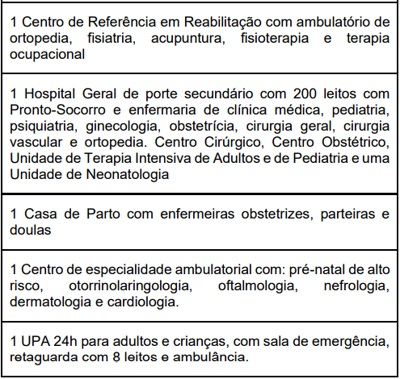

Questão 1 · Política Nacional de Atenção Básica PNAB · 4000190643De acordo com
A primeiro contato, a coordenação do cuidado e a competência cultural.
B integralidade, a competência cultural e a capilaridade.
C centralidade na família, o primeiro contato e a humanização.
D universalidade, a orientação para a comunidade e a coordenação do cuidado.
E humanização, a longitudinalidade e a integralidade.
Questão 2 · Política Nacional de Atenção Básica PNAB · 4000190639Proposta de um programa específico destinado a populações e regiões pobres a quem se oferece, exclusivamente, um conjunto de tecnologias simples e de baixo custo, provido por pessoal de baixa quali cação pro ssional e sem a possibilidade de referência a níveis de atenção de maior densidade tecnológica. A descrição apresentada é característica da
A Atenção Primária seletiva.
B Clínica Ampliada.
C Medicina Centrada na Pessoa.
D Estratégia Saúde da Família.
E Promoção da Saúde.
Questão 3 · Program Saúde da Família PSF e Estratégia Saúde da Família ESF · 4000190403Com relação à “Estratégia da Saúde da Família”, que visa à reorganização da atenção básica no País, de acordo com os preceitos do Sistema Único de Saúde, é correto afirmar que
A ela se beneficia do fato de o financiamento da Atenção Básica ser suficiente para a cobertura das principais despesas em saúde dos municípios de menor porte.
B em decorrência da limitação dos recursos de que dispõe, ela não tem a integralidade como um de seus princípios.
C a expressão “Programa de Saúde da Família”, adotada originalmente, também pode ser usada por ter o mesmo significado.
D sua equipe deve contar com, no mínimo, médico, enfermeiro, auxiliar e/ou técnico de enfermagem e agente comunitário de saúde.
E ela não é voltada para as populações quilombolas ou de assentamentos, que são atendidas por programas específicos.
Questão 4 · Program Saúde da Família PSF e Estratégia Saúde da Família ESF · 4000190094Sobre as responsabilidades das equipes do Programa Saúde da Família (PSF), é correto afirmar que
A devem trabalhar de forma resolutiva, especializada e com acesso às tecnologias de ponta, sem que haja a necessidade de encaminhar os pacientes para os serviços secundários e terciários.
B devem incentivar a participação da comunidade nos conselhos locais de saúde e no conselho municipal de saúde.
C devem trabalhar exclusivamente com triagem, para que os pacientes possam ser encaminhados para os serviços secundários e terciários com maior agilidade.
D deve ser garantida a continuidade do tratamento, que será feito, exclusivamente, nos serviços secundários de assistência à saúde.
Questão 5 · Program Saúde da Família PSF e Estratégia Saúde da Família ESF · 4000190084A estratégia de implementação do Programa Saúde da Família (PSF) propõe uma nova dinâmica para a estruturação dos serviços de saúde. Diante disso, assinale a alternativa correta.
A O PSF assume o compromisso de prestar assistência universal, integral, equânime, contínua e acima de tudo resolutiva à população.
B O PSF assume o compromisso de prestar assistência universal, integral, equânime, contínua, porém pouco resolutiva, devido à falta de tecnologia para o auxílio diagnóstico e para o estabelecimento dos tratamentos.
C Para o adequado funcionamento do PSF, o profissional médico deve se especializar cada vez mais, com o objetivo de ser capaz de conduzir patologias raras sem a necessidade de encaminhamento para os serviços terciários.
D Hoje no Brasil há um número adequado de profissionais especializados em PSF, sendo que todas as regiões do território nacional possuem uma cobertura adequada.
Questão 6 · Política Nacional de Atenção Básica PNAB · 4000189443De acordo com Barbara Starfield (2002), corresponde aos atributos da Atenção Primária à Saúde o (a)
A primeiro contato, a coordenação do cuidado e a competência cultural.
B integralidade, a competência cultural e a capilaridade.
C centralidade na família, o primeiro contato e a humanização.
D universalidade, a orientação para a comunidade e a coordenação do cuidado.
E humanização, a longitudinalidade e a integralidade.
Questão 7 · Política Nacional de Atenção Básica PNAB · 4000189439Proposta de um programa específico destinado a populações e regiões pobres a quem se oferece, exclusivamente, um conjunto de tecnologias simples e de baixo custo, provido por pessoal de baixa quali cação pro ssional e sem a possibilidade de referência a níveis de atenção de maior densidade tecnológica. A descrição apresentada é característica da
A Atenção Primária seletiva.
B Clínica Ampliada.
C Medicina Centrada na Pessoa.
D Estratégia Saúde da Família.
E Promoção da Saúde.
Questão 8 · Program Saúde da Família PSF e Estratégia Saúde da Família ESF · 4000189318O Programa Saúde da Família (PSF) é uma estratégia desenvolvida pelo Ministério da Saúde com o objetivo de oferecer a atenção básica/primária de forma mais resolutiva e humanizada, sendo fundamental à consolidação do Sistema Único de Saúde. Acerca deste programa, é CORRETO afirmar:
A Visa a ampliação da necessidade de leitos hospitalares.
B Não prevê encaminhamento para consultas especializadas.
C Prevê o cadastramento de famílias, segundo a definição da área territorial préestabelecida para a adscrição.
D Centraliza o atendimento nos agentes comunitários de saúde.
Questão 9 · Política Nacional de Atenção Básica PNAB · 4000189297A Atenção Primária à Saúde (APS) é o primeiro nível de atenção em saúde, oferecendo atendimento abrangente, acessível e baseado na comunidade, que pode atender de 80% a 90% das necessidades de saúde de uma pessoa ao longo de sua vida. A APS tem como atributos essenciais, EXCETO:
A Longitudinalidade.
B Coordenação.
C Integralidade.
D Orientação familiar.
Questão 10 · Política Nacional de Atenção Básica PNAB · 4000188226De acordo com a política Nacional de Atenção Básica (PNAB), são atribuições ESPECÍFICAS do médico que trabalha nas equipes de atenção básica:
A Encaminhar, quando necessário, usuários a outros pontos de atenção, respeitando fluxos locais, se eximindo de responsabilidade pelo acompanhamento deles.
B Garantir a atenção à saúde buscando a integralidade por meio da realização de ações de promoção, proteção, recuperação da saúde e prevenção de agravos.
C Cadastrar todas as pessoas de sua microárea e manter os cadastros atualizados.
D Realizar o cuidado da saúde da população adscrita, prioritariamente no domicílio e nos demais espaços comunitários (escolas, associações, entre outros).
E Encaminhar às unidades de referência, pacientes com indicação de pequenos procedimentos como cantoplastia, retirada de cistos e lipomas ou retirada de corpo estranho.
Questão 11 · Política Nacional de Atenção Básica PNAB · 4000188220Os Núcleos de Apoio à Saúde da Família (NASF) foram criados com o objetivo de ampliar a abrangência e o escopo das ações da atenção básica, bem como sua resolubilidade. Sobre estes, podemos afirmar, EXCETO:
A Os NASF fazem parte da atenção básica, se constituindo como serviços com unidades físicas independentes, de livre acesso para atendimento individual ou coletivo.
B São constituídos por equipes compostas por profissionais de diferentes áreas de conhecimento, que devem atuar de maneira integrada e apoiando os profissionais das equipes de Saúde da Família.
C Os NASF devem buscar contribuir para a integralidade do cuidado aos usuários do SUS principalmente por intermédio da ampliação da clínica, auxiliando no aumento da capacidade de análise e de intervenção sobre problemas e necessidades de saúde, tanto em termos clínicos quanto sanitários.
D São exemplos de ações dos NASF: discussão de casos, atendimento conjunto ou não, interconsulta, construção conjunta de projetos terapêuticos, educação permanente, ações de prevenção e promoção da saúde.
E A responsabilização compartilhada entre a equipe do NASF e as equipes de atenção básica prevê a revisão da prática do encaminhamento com base nos processos de referência e contrarreferência.
Questão 12 · Atenção Primária à Saúde APS no Brasil · 4000188160Qual dos achados em um adulto, mais comumente requer manejo imediato na avaliação primária?
A Frequência respiratória de 40 mpm
B ECG de 11
C Temperatura de 36,5ºC
D Deformidade na coxa direita
Questão 13 · Atenção Primária à Saúde APS no Brasil · 4000187401Os quatro elementos estruturais da Atenção Primária à Saúde são:
A Humanização, referenciamento, contratualização e parcerias público-privadas.
B Gratuidade, descentralização, municipalização e legalidade.
C Acesso de primeiro contato, integralidade, longitudinalidade e coordenação do cuidado.
D Competência cultural, sistemas de informação, economia e vacinação.
Questão 14 · Program Saúde da Família PSF e Estratégia Saúde da Família ESF · 4000186674Programa de Agentes Comunitários de Saúde PACS Sobre território e comunidade adscrita, assinale a alternativa INCORRETA:
A A territorialização e a definição do território como responsabilidade de cada equipe estão entre as diretrizes da Política Nacional de Atenção Básica (PNAB).
B Em áreas de grande dispersão territorial, áreas de risco e vulnerabilidade social, recomenda- se a cobertura de 70% da população com número máximo de 1.000 pessoas por ACS.
C O processo de territorialização deve ser considerado um meio operacional para o desenvolvimento do vínculo entre os serviços de saúde e a população, permitindo aproximação para o entendimento dos problemas e necessidades de saúde do território.
D Um exemplo da importância de se conhecer o território para atuação nos principais problemas de saúde da comunidade é o caso região Amazônica que concentra mais de 99% dos casos de malária do Brasil, e a atuação integrada da Vigilância em Saúde com a Atenção Básica é fundamental para o controle da doença.
Questão 15 · Atenção Primária à Saúde APS no Brasil · Atributos gerais da Atenção Primária à Saúde APS · 4000186607Mulher, 83 anos, com cardiopatia isquêmica, diabetes e catarata, vem à Unidade Básica de Saúde trazida pela vizinha com a demanda de ser novamente encaminhada para consulta com o cardiologista, pois havia perdido a marcação. A paciente não fez os exames solicitados, faltou ao procedimento agendado com o oftalmologista e desconhece a causa da sua internação em hospital terciário recentemente. O atributo da Atenção Primária à Saúde mais adequado para atender este caso é
A hierarquização.
B coordenação.
C equidade.
D acesso.
Questão 16 · Avaliação da Qualidade em Atenção Primária à Saúde · 4000186585Os atributos da APS são fortalecidos pelo Pagamento por Desempenho do Programa Previne Brasil, o que induz o aprimoramento dos processos de trabalho e à quali cação dos resultados em saúde, além de otimizar aspectos como periodicidade e método da avaliação. Exemplo disso é que, por meio do monitoramento desses indicadores, podem ser avaliados os acessos à qualidade e à resolutividade dos serviços prestados pelas eSF/eAP, fornecendo subsídios para medidas de aprimoramento das ações e dando mais transparência aos investimentos na área da saúde para a sociedade. FONTE: Ministério da Saúde/SAPS. Para 2022, temos como indicador avaliado para essas equipes:
A Proporção de gestantes com pelo menos 6 (seis) consultas pré-natal realizadas, sendo a 1ª (primeira) até a 20ª (vigésima) semana de gestação.
B Proporção de crianças de 1 (um) ano de idade vacinadas na APS contra Difteria, Tétano, Coqueluche, Hepatite B, infecções causadas por haemophilus influenzae tipo b e Poliomielite inativada.
C Proporção de pessoas com hipertensão arterial, com consulta e pressão arterial aferida a cada bimestre, seja com o médico ou enfermeiro.
D Proporção de pessoas com diabetes, com consulta e hemoglobina glicada solicitada e realizada a cada ano.
Questão 17 · Programa de Agentes Comunitários de Saúde PACS · 4000186185Rodolfo Beso tem 55 anos, portador de HAS, DM2 (ambos há cerca de 10 anos), tabagista há 30 anos (atualmente fuma 01 maço ao dia), etilista (faz uso de cerveja apenas aos nais de semana). Sedentário. Trabalha como motorista de ônibus num regime de 8h/dia. História familiar de pais diabéticos e hipertensos, mãe falecida com AVC aos 50 anos. Rodolfo Beso reside no bairro Pacupéva, localizada no distrito leste do município de Curimbatá do Oeste. A UBS responsável por esse bairro também atende os bairros Bagrinho, Lambari e Rapa-canoa. A UBS chama-se Cardume feliz. Tem cerca de 5000 pessoas cadastradas e contam com 06 microáreas cobertas. A Unidade tem apenas uma equipe da Estratégia de Saúde da família. Rodolfo procurou a UBS supracitada para uma consulta de acompanhamento. Está em uso de losartana 50mg VO 12/12h, glicazida 60mg VO cedo, metformina XR 1g VO 02 cps ao dia. Traz resultados de exames (glicemia de jejum 245, HbA1C 9,5%, colesterol total 302, HDL 28, LDL 202, Triglicerideos 520, Creatinina 1,3, K 4,5, EAS com glicose ++ sem outras alterações). Sua pré-consulta evidencia: peso: 115kg, alt 172 cm, PA 160x100 mmHg. Dextro (pós prandial) 334 mg/dl. Sobre o território que o paciente Rodolfo Beso reside, marque V para as afirmativas verdadeiras e F para as falsas. ( ) A área de influência da UBS são os bairros: bagrinho, lambari e rapa-canoa. ( ) A área de influência é o bairro Pacupeva. ( ) Território distrito é a menor divisão do território. ( ) A UBS tem no mínimo 06 Agentes Comunitários de Saúde. Assinale a sequência correta.
A F, V, V, V
B F, F, F, V
C V, F, V, F
D V, V, F, F
Questão 18 · Política Nacional de Atenção Básica PNAB · 4000186178Considerando o processo de trabalho da Equipe Multipro ssional de Saúde, qual a rmativa melhor apresenta as atividades e atribuições previstas para o Agente Comunitário de Saúde (ACS), na Política Nacional de Atenção Básica (PNab)?
A Contribuir com as atividades de supervisão e educação permanente da equipe, sendo o responsável pelo gerenciamento da UBS e a articulação com os demais níveis de atenção. Participar do gerenciamento de insumos na unidade.
B Realizar assistência integral a famílias e indivíduos nos domicílios ou em qualquer espaço da comunidade visando à melhoria da qualidade de vida, a partir dos conceitos de vigilância em saúde com autonomia, segurança e responsabilidade.
C Realizar ações de promoção, educação em saúde, vigilância em saúde, integrando a população à equipe e ao sistema de saúde como um todo. Estimular a mobilização da comunidade na luta pela melhoria da qualidade da saúde.
D Realizar procedimentos terapêuticos no contexto da comunidade desde que sejam regulamentados pela profissão. Dar assistência integral às famílias da área de abrangência da equipe, em todas as fases do ciclo de vida. Ser responsável pelas atividades de educação permanente e pelo planejamento, coordenação e avaliação das ações da equipe.
Questão 19 · Program Saúde da Família PSF e Estratégia Saúde da Família ESF · 4000186168Considerando a organização do acesso à Estratégia Saúde da Família e as recomendações do Ministério da Saúde, no modelo de acesso avançado tem-se que:
A Pacientes com queixas agudas devem procurar a Unidade Básica de Saúde no dia específico para esse perfil de atendimento.
B A agenda deve reservar pelo menos 80% das vagas para atendimentos a pacientes crônicos.
C O agendamento programático, modelo preferencial na Atenção primária à Saúde, reserva dias específicos da semana para atendimentos ao Hiperdia e pré-natal.
D Busca-se equilibrar o número de atendimentos à demanda espontânea e os agendamentos futuros necessários (cerca de 30%).
Questão 20 · Program Saúde da Família PSF e Estratégia Saúde da Família ESF · 4000186124Pedro é médico há anos em uma equipe de Estratégia de Saúde da Família de um município no Paraná. Considerando o programa Previne Brasil, qual dos atendimentos realizados por Pedro no ano de 2022 seria considerado como indicador de desempenho necessário para que o município no qual Pedro atua receba mais recursos para a Atenção Primária?
A Atendimento de João de 20 anos, que vem para exames de rotina, e solicita sorologia para HIV.
B Atendimento de Joana de 56 anos, é solicitada mamografia de rotina.
C Consulta de Mariana, gestante de 27 anos, é solicitada sorologia para sífilis e HIV.
D Consulta de Mario, hipertenso e diabético, realizada glicemia de jejum semestralmente.
E Consulta de Jonas de 55 anos, realizado PSA anualmente.
Questão 21 · Program Saúde da Família PSF e Estratégia Saúde da Família ESF · 4000185941Programa de Agentes Comunitários de Saúde PACS A Comissão de Defesa dos Direitos das Pessoas com De ciência da Câmara dos Deputados aprovou em 13/07/2022 projeto de lei que dá aos pacientes do Sistema Único de Saúde (SUS) com mobilidade reduzida o direito à aplicação domiciliar de medicamentos, procedimentos e vacinas. A proposta, que modi ca a Lei Orgânica da Saúde, também concede a esses pacientes o direito de receber em casa todos os medicamentos de uso contínuo prescritos por médico, sem ônus. Dentro do programa Atenção Familiar, o atendimento domiciliar consiste em:
A envolver ou não cuidados multiprofissionais e é desenvolvida por uma equipe específica ligada a hospitais.
B relaciona-se à atuação profissional no domicílio que pode acontecer por meio de visita ou internação domiciliar, envolvendo ações de prevenção, promoção, assistência e reabilitação.
C relaciona-se a visitas dos agentes comunitários de saúde (ACS), visando manter a equipe de saúde informada sobre o estado de saúde das pessoas acometidas por patologias crônicas.
D envolve a internação domiciliar, realizada pela equipe da Unidade de Saúde e visa diminuir o tempo de internamento hospitalar e diminuir os riscos.
Revisar: possível letra faltando em enunciado
Questão 22 · Avaliação da Qualidade em Atenção Primária à Saúde · Política Nacional de Atenção Básica PNAB · 4000185364Assinale a alternativa que apresenta aspectos relacionados à longitudinalidade do cuidado.
A Tratamento continuado, identificação com o profissional de saúde e continuidade informacional.
B Identificação da unidade básica como fonte regular de cuidado, vínculo do cuidado duradouro e continuidade informacional.
C Resolutividade, identificação com o profissional de saúde e vínculo do cuidado duradouro.
D Cuidado centrado na pessoa, compromisso do médico com o paciente e tratamento continuado.
E Rigor no diagnóstico médico, identificação do médico com o paciente e tratamento adequado e continuado
Questão 23 · Program Saúde da Família PSF e Estratégia Saúde da Família ESF · 4000185362Programa de Agentes Comunitários de Saúde PACS O senhor Alfredo e a dona Miriam têm, respectivamente, 80 e 78 anos de idade, e são casados há 60 anos. Moram em uma cidade de 50 mil habitantes e seus lhos e netos moram em uma cidade de maior porte a, aproximadamente, 150 quilômetros. Em um nal de semana, o senhor Alfredo passa mal, é levado ao serviço de urgência por um vizinho, e a dona Miriam recebe a notícia de que ele sofreu um acidente vascular cerebral. Após vários dias no hospital, recebe alta com hemiparesia à esquerda e afasia. Assinale a alternativa correta quanto ao processo de recuperação do senhor Alfredo.
A Os filhos do casal devem abrigá-lo, ficando o senhor Alfredo com quem tem melhores condições de moradia, pois haverá necessidade de cuidadores.
B A equipe de saúde da atenção básica deve buscar uma possibilidade de internar o senhor Alfredo em hospital de longa permanência para aliviar a carga de dona Miriam e convocar a família para que os seus membros os levem para a outra cidade.
C O hospital deve orientar o casal a buscar acomodações próximas ao serviço de reabilitação que a unidade de serviço oferece ambulatorialmente.
D A equipe de saúde da atenção básica deve convocar os filhos do casal e orientá-los no sentido de que o casal necessitará de cuidadores durante 24 horas por dia para que o senhor Alfredo possa se recuperar.
E A equipe de saúde da atenção básica deve analisar o caso, levando em conta que o senhor Alfredo necessitará de reabilitação e atenção que talvez dona Miriam não poderá oferecer, e construir com a família a melhor forma de prosseguir os cuidados.
Questão 24 · Política Nacional de Atenção Básica PNAB · 4000185296A população em situação de rua no Brasil cresceu 38% entre 2019 e 2022, quando atingiu 281.472 pessoas. A estimativa, que revela o impacto da pandemia da COVID-19 nesse segmento populacional, consta da publicação preliminar “Estimativa da População em Situação de Rua no Brasil (2012-2022)". Disponível em: <https://www.ipea.gov.br/portal>. Acesso em: dez. 2022. A estratégia Consultório na Rua foi instituída pela Política Nacional de Atenção Básica, em 2011, e visa ampliar o acesso da população em situação de rua aos serviços de saúde, ofertando, de maneira mais oportuna, atenção integral à saúde para esse grupo populacional, o qual se encontra em condições de vulnerabilidade e com os vínculos familiares interrompidos ou fragilizados. Disponível em: <https://bvsms.saude.gov.br/bvs/publicacoes>. Acesso em: dez. 2022. Quanto à atividade do Consultório de Rua, pode-se afirmar:
A A carga horária pode exigir trabalho noturno e aos fins de semana.
B Deve haver profissionais médicos, além dos demais profissionais, em todas as equipes.
C A equipe do Consultório de Rua não tem fixação a Unidades específicas de saúde.
D Mesmo com mobilidade, existe uma população e um território adstritos ao Consultório de Rua.
Questão 25 · Política Nacional de Atenção Básica PNAB · 4000185295A população em situação de rua no Brasil cresceu 38% entre 2019 e 2022, quando atingiu 281.472 pessoas. A estimativa, que revela o impacto da pandemia da COVID-19 nesse segmento populacional, consta da publicação preliminar “Estimativa da População em Situação de Rua no Brasil (2012-2022)". Disponível em: <https://www.ipea.gov.br/portal>. Acesso em: dez. 2022. A estratégia Consultório na Rua foi instituída pela Política Nacional de Atenção Básica, em 2011, e visa ampliar o acesso da população em situação de rua aos serviços de saúde, ofertando, de maneira mais oportuna, atenção integral à saúde para esse grupo populacional, o qual se encontra em condições de vulnerabilidade e com os vínculos familiares interrompidos ou fragilizados. Disponível em: <https://bvsms.saude.gov.br/bvs/publicacoes>. Acesso em: dez. 2022. Considerando-se a clientela do Consultório de Rua, pode se dizer que
A a proporção de homens e de mulheres é semelhante, com pouca variação de gênero.
B a maioria dos moradores de rua não é alfabetizada, o que dificulta o trabalho.
C a população de idosos supera a de adultos jovens, entre os moradores de rua.
D o uso de drogas supera, apenas ligeiramente, o desemprego como causa para morar na rua.
Questão 26 · Política Nacional de Atenção Básica PNAB · 4000185294A população em situação de rua no Brasil cresceu 38% entre 2019 e 2022, quando atingiu 281.472 pessoas. A estimativa, que revela o impacto da pandemia da COVID-19 nesse segmento populacional, consta da publicação preliminar “Estimativa da População em Situação de Rua no Brasil (2012-2022)". Disponível em: <https://www.ipea.gov.br/portal>. Acesso em: dez. 2022. A estratégia Consultório na Rua foi instituída pela Política Nacional de Atenção Básica, em 2011, e visa ampliar o acesso da população em situação de rua aos serviços de saúde, ofertando, de maneira mais oportuna, atenção integral à saúde para esse grupo populacional, o qual se encontra em condições de vulnerabilidade e com os vínculos familiares interrompidos ou fragilizados. Disponível em: <https://bvsms.saude.gov.br/bvs/publicacoes>. Acesso em: dez. 2022. Indique a principal estratégia utilizada pelas equipes dos Consultórios de Rua:
A Aceitar a inexistência de vínculo entre pacientes e equipes.
B Trabalhar na perspectiva de redução de danos.
C Buscar a adesão dos pacientes às agendas de atendimento.
D Buscar a adesão dos pacientes aos serviços de apoio (abrigos etc).
Questão 27 · Atenção Primária à Saúde APS no Brasil · Avaliação da Qualidade em Atenção Primária à Saúde · 4000184044A nova gerente de uma Unidade Básica de Saúde (UBS) decide criar uma página virtual para que os usuários possam enviar reclamações sobre problemas do serviço, o que cria um clima de descontentamento entre os trabalhadores da equipe. Assinale a alternativa correta.
A Trata-se de uma excelente iniciativa da gerente da UBS para identificar os maus trabalhadores da equipe.
B É uma forma de a gerente reforçar sua autoridade diante da equipe de saúde e ganhar a simpatia dos usuários.
C A iniciativa poderia ser válida se fosse fruto de diálogo para valorizar os usuários, trabalhadores e gestores na construção do processo de produção da saúde.
D Deve haver um processo de formação dos usuários para que as reclamações sejam relevantes.
Questão 28 · Política Nacional de Atenção Básica PNAB · 4000183775Dra. Elis iniciou recentemente seus atendimentos como médica generalista em uma Unidade Básica de Saúde (UBS). Ela atende o Sr. Manoel de 65 anos que é hipertenso, diabético e esquizofrênico, fazendo uso atualmente de enalapril, hidroclorotiazida, metformina, que pega na UBS e atorvastatina e quetiapina; que pega na farmácia do estado. Ele consulta para renovar suas receitas, pois seus medicamentos estão acabando. Sua próxima consulta com o psiquiatra será em 3 meses. Sobre o acompanhamento da Dra. Elis para o Sr. Manoel, considerando a Política Nacional da Atenção Básica e os medicamentos oferecidos no Sistema Único de Saúde, assinale a alternativa
A Dra. Elis deverá renovar todas as receitas pois a UBS é coordenadora da atenção;
B Os medicamentos do componente especializado deverão ser renovados com os especialistas focais, considerando a hierarquização do sistema;
C A atorvastatina deverá ser substituída pela sinvastatina, disponível nas UBS;
D Dra. Elis poderá renovar todos os medicamentos com exceção da quetiapina, já que o paciente consulta com o psiquiatra.
Questão 29 · Atenção Primária à Saúde APS no Brasil · 4000183774Princípios e Diretrizes do SUS a serem operacionalizados pela Atenção Básica Atributos gerais da Atenção Primária à Saúde APS A Secretaria de Saúde do Paraná tem implementado há alguns anos um novo Modelo de Atenção às Condições Crônicas no Sistema Único de Saúde (SUS), que propõe mudanças na organização dos Sistemas e da Atenção à Saúde. A Atenção Primária a Saúde (APS) é ordenadora do Sistema, integrando-se com Atenção Especializada (AAE) através das linhas de cuidado prioritárias. Sobre esse modelo, preconiza-se:
A Estratificação de risco, que é imprescindível para a implantação do novo modelo: APS coordenadora dos pacientes de baixo risco e AAE coordenadora do cuidado dos pacientes de médio e alto risco;
B Atenção à saúde proativa e resolutiva, por meio da qual o usuário recebe orientações preventivas, curativas e de reabilitação à sua saúde conforme o Plano de Cuidado e o Autocuidado Apoiado;
C Atendimento realizado pelo médico especialista no ambulatório no máximo a cada 2 meses;
D Integração em rede pela AAE com os outros níveis de Atenção à Saúde por meio das ações de supervisão, de auditoria e de fiscalização.
Questão 30 · Redes de Atenção à Saúde RAS · Expansão da APS no Brasil · 4000183556Leia o seguinte conceito: “ São arranjos organizativos de ações e serviços de saúde, de diferentes densidades tecnológicas, que integradas por meio de sistemas de apoio técnico, logístico e de gestão buscam garantir a integralidade do cuidado Trata-se de:
A programas de saúde;
B redes de atenção à saúde;
C planos de saúde;
D empresas médicas.
Questão 31 · Política Nacional de Atenção Básica PNAB · 4000183012A Estratégia Saúde da Família (ESF) é a estratégia prioritária de expansão, consolidação e quali cação da Atenção Básica no Brasil. Dentro da rede de atenção à saúde, a ESF tem o desa o de funcionar como um centro de comunicação entre os diversos pontos de atenção. Conforme a Política Nacional de Atenção Básica – PNAB (2017), assinale a diretriz que contempla esse papel:
A Territorialização e Adstrição
B Equidade
C Coordenação
D Integralidade
Questão 32 · Política Nacional de Atenção Básica PNAB · 4000183011Para que a Estratégia Saúde da Família tenha seu funcionamento adequado, cumprindo seus princípios e diretrizes, é recomendado pela PNAB (2017), que:
A A população adscrita por equipe de saúde seja de 3500 a no máximo 5000 pessoas.
B A equipe mínima seja composta por um médico, preferencialmente da especialidade medicina de família e comunidade, um enfermeiro, um dentista e técnicos de enfermagem.
C As pessoas identificadas como fora da área de abrangência devem ser prontamente encaminhadas para unidades de saúde próximas ao endereço de residência a fim de garantir seu acolhimento adequado.
D Os profissionais da ESF deverão estar vinculados a apenas uma equipe de saúde da família, devendo cumprir obrigatoriamente a carga horária de 40 horas semanais.
Questão 33 · Programa Nacional de Melhoria do Acesso e da Qualidade da Atenção Básica PMAQ · 4000183010Política Nacional de Atenção Básica PNAB A Atenção Domiciliar na Atenção Básica pertence à modalidade AD1, sendo um cuidado que deve ser oferecido na seguinte situação:
A Pessoas que têm a necessidade frequente de exames de laboratório de alta complexidade.
B Pessoas que possuam problemas de saúde compensados e com dificuldade de locomoção até a unidade de saúde.
C Apenas às pessoas que se encontram permanentemente acamadas, e que, portanto, não podem se deslocar até a unidade de saúde.
D Pessoas com necessidade de visitas regulares, de frequência semanal, como a realização de curativos complexos.
Questão 34 · Atenção Primária à Saúde APS no Brasil · 4000183007“Atenção essencial à saúde baseada em tecnologia e métodos práticos, cienti camente comprovados e socialmente aceitáveis, tornados universalmente acessíveis a indivíduos e famílias na comunidade a um custo que tanto a comunidade como o país possam arcar em cada estágio de seu desenvolvimento, um espírito de autoconfiança e autodeterminação”. O conceito descrito se refere à:
A Prevenção Primária
B Método Clínico Centrado na Pessoa
C Estratégia Saúde da Família
D Atenção Primária à Saúde
Questão 35 · Programa de Agentes Comunitários de Saúde PACS · 4000182475Na organização da atenção básica de saúde, com relação ao Agente Comunitário de Saúde (ACS) e ao Agente de Controle de Endemias (ACE), é correto afirmar que
A são, na verdade, o mesmo tipo de profissional, diferenciados apenas pela denominação que varia de acordo com períodos com ou sem endemias.
B desempenham papéis secundários na rotina das atribuições da atenção básica.
C o controle das endemias é de responsabilidade exclusiva dos ACE.
D o ACS se constitui como elo entre a comunidade e os serviços de saúde e o ACE como articulador e planejador das ações de combate ás endemias.
E embora realizem ações comuns, há um núcleo de atividades que é específico a cada um deles.
Questão 36 · Saúde ColetivaAtenção Primária à Saúde · Atenção Primária à Saúde APS no Brasil · 4000182473Em uma Unidade Básica de Saúde – UBS há uma grande demanda espontânea. De forma a organizar a ordem de atendimento, esta unidade deve
A atender rigorosamente, de acordo com a ordem de chegada dos usuários, para evitar injustiças.
B atender prioritariamente idosos e crianças em função de sua maior vulnerabilidade.
C preocupar-se com o acesso com equidade podendo, já na recepção da unidade, uma atendente, um porteiro ou um segurança identificar situações que apresentam maior risco ou que geram sofrimento intenso.
D estabelecer critérios de prioridade no atendimento que devem ser aplicados exclusivamente pelos médicos ou enfermeiros, ou dentistas quando se tratar que problema odontológico.
E recusar-se a atender quem não agendou previamente o comparecimento à unidade, orientando para que a demanda espontânea seja transferida para prontos-socorros ou unidades de pronto atendimento.
Questão 37 · Atenção Primária à Saúde APS no Brasil · 4000181214A Atenção Primária a Saúde (APS) constitui um dos níveis de atenção à saúde mais estratégicos do Sistema Único de Saúde (SUS). Entre as razões que a tornam tão fundamental para o sistema de saúde, considere as afirmativas a seguir. I. É o nível de atenção com maior possibilidade de produção de vínculo com as pessoas. II. É o nível de atenção com grande amplitude e complexidade de ações, desde preventivas a curativas. III. É o nível de atenção mais acessado pela população brasileira. IV. É o nível de atenção mais preparado para atender condições agudas urgentes e emergentes. Assinale a alternativa correta.
A Somente as afirmativas I e II são corretas.
B Somente as afirmativas I e IV são corretas.
C Somente as afirmativas III e IV são corretas.
D Somente as afirmativas I, II e III são corretas.
E Somente as afirmativas II, III e IV são corretas.
Questão 38 · Atenção Primária à Saúde APS no Brasil · Outros · Atributos gerais da Atenção Primária à Saúde APS · 4000191379A Atenção Básica tem como fundamentos e diretrizes a de possibilitar o acesso universal e contínuo a serviços de saúde de qualidade e resolutivos:
A Caracterizados como a porta de entrada fechada e não preferencial da rede de atenção, acolhendo os usuários e promovendo a vinculação e corresponsabilização pela atenção às suas necessidades de saúde.
B Caracterizados como a porta de entrada aberta e preferencial da rede de atenção, acolhendo os usuários e promovendo a vinculação e corresponsabilização pela atenção às suas necessidades de saúde.
C Caracterizados como a porta de entrada aberta, mas não preferencial da rede de atenção, acolhendo os usuários e promovendo a vinculação e corresponsabilização pela atenção às suas necessidades de saúde.
D Caracterizados como a porta de entrada aberta e preferencial da rede de atenção, acolhendo os usuários e evitando a vinculação pela atenção às suas necessidades de saúde.
Questão 39 · Atenção Primária à Saúde APS no Brasil · 4000191371O serviço de saúde Atenção Básica deve se organizar para assumir sua função central de acolher, escutar e oferecer uma resposta positiva, sendo:
A Capaz de resolvera grande maioria dos problemas de saúde da população e/ou de minorar danos e não os sofrimentos desta, ou ainda se responsabilizar pela resposta, ainda que esta seja ofertada em outros pontos de atenção da rede.
B Capaz de resolver a grande maioria dos problemas de saúde da população e/ou de minorar danos e sofrimentos desta, nunca pode se responsabilizar pela resposta, ainda que esta seja ofertada em outros pontos de atenção da rede.
C Incapaz de resolver a grande maioria dos problemas de saúde da população e/ou de minorar danos e sofrimentos desta, ou ainda se responsabilizar pela resposta, ainda que esta seja ofertada em outros pontos de atenção da rede.
D Capaz de resolver a grande maioria dos problemas de saúde da população e/ou de minorar danos e sofrimentos desta, ou ainda se responsabilizar pela resposta, ainda que esta seja ofertada em outros pontos de atenção da rede.
Questão 40 · Atenção Primária à Saúde APS no Brasil · 4000191369A proximidade e a capacidade de acolhimento, vinculação, responsabilização e resolutividade:
A Não são fundamentais para a efetivação da atenção básica como contato e porta de entrada preferencial da rede de atenção.
B São fundamentais para a efetivação da atenção básica como contato e não porta de entrada preferencial da rede de atenção.
C São fundamentais para a efetivação da atenção básica como contato e porta de entrada preferencial da rede de atenção.
D São fundamentais para a efetivação da atenção especializada porta de entrada preferencial da rede de atenção.
Questão 41 · Atenção Primária à Saúde APS no Brasil · Atributos gerais da Atenção Primária à Saúde APS · 4000191356Sobre adscrever os usuários e desenvolver relações de vínculo e responsabilização entre as equipes e a população adscrita, garantindo a continuidade das ações de saúde e a longitudinalidade do cuidado, pode-se afirmar que:
A A adscrição dos usuários não é um processo de vinculação de pessoas e/ou famílias e grupos a profissionais/equipes, com o objetivo de ser referência para o seu cuidado.
B A adscrição dos usuários é um processo de vinculação de pessoas e/ou famílias e grupos a profissionais/equipes, sem o objetivo de ser referência para o seu cuidado.
C A adscrição dos usuários é um processo de vinculação de pessoas e/ou famílias e grupos a profissionais/equipes, com o objetivo de ser referência para o seu cuidado.
D A adscrição dos usuários é um processo de vinculação de pessoas e não de famílias ou grupos a profissionais/equipes, com o objetivo de ser referência para o seu cuidado.
Questão 42 · Atenção Primária à Saúde APS no Brasil · 4000191354O estabelecimento de mecanismos que assegurem acessibilidade e acolhimento na Atenção Básica pressupõe:
A Uma lógica de organização e funcionamento do serviço de saúde que parte do princípio de que a unidade de saúde deva receber e ouvir todas as pessoas que procuram os seus serviços, de modo universal e sem diferenciações excludentes.
B Uma lógica de organização e não de funcionamento do serviço de saúde que parte do princípio de que a unidade de saúde deva receber e ouvir todas as pessoas que procuram os seus serviços, de modo universal e sem diferenciações excludentes.
C Uma lógica de organização e funcionamento do serviço de saúde que parte do princípio de que a unidade de saúde não deva receber e ouvir todas as pessoas que procuram os seus serviços, de modo universal e sem diferenciações excludentes.
D Uma lógica de organização e funcionamento do serviço de saúde que parte do princípio de que a unidade de saúde deva receber e não ouvir todas as pessoas que procuram os seus serviços, de modo universal e sem diferenciações excludentes.
Questão 43 · Programa Nacional de Melhoria do Acesso e da Qualidade da Atenção Básica PMAQ · 4000175792Política Nacional de Atenção Básica PNAB Marque a alternativa CORRETA:
A Um serviço é considerado “porta de entrada ao sistema de saúde” quando não é identificado pela população como o primeiro recurso a ser buscado, em caso de necessidade em saúde.
B Longitudinalidade não pressupõe a existência de uma fonte regular de atenção, por isso, não é necessário adscrição da população pelas equipes de saúde, e, também não favorece uma maior integralidade no cuidado.
C “Porta de entrada ao sistema de saúde” refere-se tanto à acessibilidade quanto a utilização do serviço pela população para um novo evento de saúde ou para um episódio novo de um evento antigo.
D A longitudinalidade não tem como vantagem permitir um atendimento mais precoce.
Questão 44 · Atributos gerais da Atenção Primária à Saúde APS · Política Nacional de Atenção Básica PNAB · 4000175791A Política Nacional da Atenção Básica (PNAB) foi instituída pela Portaria nº 2.436, de 21 de setembro de 2017 e define a organização em Redes de Atenção à Saúde (RAS) como estratégia para um cuidado integral e direcionado às necessidades de saúde da população. Sobre PNAB, é CORRETO afirmar:
A O princípio da Equidade corresponde a ofertar o cuidado, reconhecendo as diferenças nas condições de vida e saúde e de acordo com as necessidades das pessoas, considerando que o direito à saúde passa pelas
B A diretriz de coordenação do cuidado diz respeito a acompanhar e organizar o fluxo dos usuários entre os pontos de atenção das RAS, fazendo com o que o usuário tenha acesso a maior quantidade de especialistas possível.
C A diretriz de universalidade possibilita o acesso universal e contínuo a serviços de saúde de qualidade e resolutivos, incluindo a porta de entrada da RAS (primeiro contato), atendimento ambulatorial e hospitalar.
D O princípio de resolutividade reforça a importância de a Atenção Básica ser resolutiva, utilizando e articulando diferentes tecnologias de cuidado individual, em detrimento do coletivo, por meio de uma clínica ampliada capaz de construir vínculos positivos e intervenções clínicas e sanitariamente efetivas.
Questão 45 · Program Saúde da Família PSF e Estratégia Saúde da Família ESF · 4000175315A Estratégia Saúde da Família (ESF) visa à reorganização da atenção básica no país de acordo com os preceitos do Sistema Único de Saúde, tida como estratégia de expansão, quali cação e consolidação da atenção básica. A respeito da ESF, é correto afirmar:
A Na ESF o trabalho em equipe não é considerado um dos pilares para a mudança do atual modelo hegemônico em saúde, já que a interação constante e intensa de trabalhadores de diferentes categorias pode prejudicar o cuidado ao usuário.
B A ESF não tem como uma estratégia de trabalho conhecer a realidade das famílias pelas quais é responsável, por meio de cadastramento e diagnóstico de suas características sociais, demográficas e epidemiológicas.
C Uma das responsabilidades da ESF é identificar os principais problemas de saúde e situações de risco da população adscrita, além de prestar assistência integral e encaminhar para os demais níveis de atendimento, quando necessário.
D A Política Nacional de Atenção Básica tem na Saúde de Família sua estratégia prioritária para expansão e consolidação da Atenção Básica (AB). Entretanto, a portaria nº 2.436, de 21 de setembro de 2017 define que a AB não deve ser a principal porta de entrada da Rede de Atenção à Saúde e sim as unidades de Pronto Atendimento.
E Na ESF, ao se trabalhar a equidade não se pode considerar as diferenças nas condições de vida de cada pessoa, já que todos devem ser tratados de forma igualitária sem reconhecer que o direito à saúde vai além das diferenças sociais.
Questão 46 · Program Saúde da Família PSF e Estratégia Saúde da Família ESF · Vigilância Epidemiológica · 4000174843Programa de Agentes Comunitários de Saúde PACS Considerando-se as Diretrizes Nacionais da Vigilância em Saúde, analisar os itens abaixo: I. A vigilância em Saúde, visando à integralidade do cuidado, deve inserir-se na construção das redes de atenção à saúde, coordenadas pela Atenção Primária à Saúde. II. A incorporação do Agente de Combate às Endemias (ACE) nas equipes de saúde da família pressupõe a reorganização dos processos de trabalho, com integração das bases territoriais dos Agentes Comunitários de Saúde (ACS) e dos ACE, com definição de papéis e responsabilidades, e a supervisão dos ACE pelos pro ssionais de nível superior da Equipe de Saúde da Família. III. As ações de Vigilância em Saúde, incluindo-se a promoção da saúde, devem estar inseridas no cotidiano das equipes de Atenção Primária - Saúde da Família, com atribuições e responsabilidades definidas em território único de atuação, integrando os processos de trabalho, planejamento, monitoramento e avaliação dessas ações. Está(ão) CORRETO(S):
A Somente o item I.
B Somente os itens I e II.
C Somente os itens I e III.
D Somente os itens II e III.
E Todos os itens.
Questão 47 · Programa Nacional de Melhoria do Acesso e da Qualidade da Atenção Básica PMAQ · 4000171104Avaliação da Qualidade em Atenção Primária à Saúde Sobre o ciclo PDCA e sua aplicação na gestão da saúde, pode-se afirmar que
A tem relação com o ciclo de vida em que se encontra cada família, auxiliando no diagnóstico e na determinação de recursos necessários para monitoramento do núcleo familiar em estudo.
B se trata de ferramenta aplicada para avaliação da qualidade e gerenciamento de serviços exclusivos da área hospitalar.
C se configura como um dos mais conhecidos conceitos da gestão da qualidade em saúde, utilizando o MASP (Método de Análise e Solução de Problemas).
D foi criado no século III a.C. a partir do pensamento silogista de Aristóteles, base fundamental da inferência empregada atualmente no método científico.
E baseado na filosofia de Henry Ford no contexto pós Revolução Industrial, o ciclo PDCA serviu como norteador dos processos em saúde, preconizando a produção em massa com maior eficiência.
Questão 48 · Programa Mais Médicos Programa Médicos pelo Brasil · 4000171103Diante de diversas tentativas de obtenção e xação de recursos humanos na Atenção Primária em Saúde, o governo brasileiro criou, em 2013, por meio da Portaria 12.871, o Programa Mais Médicos, o qual tem a finalidade de, exceto:
A aprimorar a formação médica no País com ampliação da carga horária de Atenção Básica e Serviço de Urgência e Emergência do SUS para pelo menos 30% (trinta por cento) dos dois anos de internato médico.
B ofertar, anualmente, vagas nos Programas de Residência Médica de que trata a Lei no 6.932, de 7 de julho de 1981, equivalentes ao número de egressos dos cursos de graduação em Medicina do ano anterior.
C disponibilizar vagas para atuação na Atenção Primária em Saúde brasileira aos médicos formados em instituições de educação superior estrangeiras, por meio de intercâmbio médico internacional.
D dotar, em até cinco anos após sua promulgação, as unidades básicas de saúde com qualidade de equipamentos e infraestrutura, a serem definidas nos planos plurianuais.
E assegurar planos de carreira, cargos e salários aos médicos participantes como forma de incentivar a permanência destes profissionais neste nível da assistência em saúde.
Questão 49 · Atenção Primária à Saúde APS no Brasil · Modelos Explicativos de Saúde e Doença · 4000170635Giovanna, uma criança com nove meses de vida, que frequenta a creche, foi levada ao acolhimento da UBS, para consulta com médica da família, por queixa de tosse, coriza e febre há dois dias. Na creche da paciente, está tendo um surto de bronquiolite e Ana, sua mãe, chegou à UBS muito assustada, com medo de a criança ter “pego a tal doença”. Ao exame físico, a criança está em bom estado geral, hidratada, com saturação de 96% e frequência respiratória de 30 ipm. Na ausculta pulmonar, há sibilos esparsos, porém sem tiragem intercostal ou subcostal. Não está febril e há diurese na fralda. Com base nesse caso hipotético, é correto a rmar que, na comparação entre o manejo na APS e o manejo no pronto- socorro, as principais ferramentas que se pode utilizar na APS são
A o acesso e o método clínico centrado na pessoa.
B a longitudinalidade e a demora permitida.
C a triagem por escala de Manchester e a gestão do tempo.
D as tecnologias leves e os exames complementares.
E as tecnologias duras e a longitudinalidade.
Questão 50 · Atenção Primária à Saúde APS no Brasil · 4000170632Em 2000, Mark Murray e Catherine Tantau publicaram o artigo Same-day appointments: revista FPM, vinculada à explicação de como ele deve ser organizado em um serviço de atenção primária. Um dos seus preceitos é o de que 65% a 75% das vagas para agendamento de um médico de família estejam livres para consultas em até 48 h. Em relação a esse novo modelo de atendimento, assinale a alternativa correta.
A Prejudica a longitudinalidade.
B Dificulta a coordenação de cuidado.
C Amplia o acesso à equipe de saúde da família.
D Facilita o manejo de doenças crônicas não transmissíveis.
E Prejudica o acolhimento à demanda espontânea.
Questão 51 · Descentralização do SUS · Expansão da APS no Brasil · 4000170494A saúde trabalha com diferentes tipos de tecnologia, classificando-as em tecnologias leves, duras e leve-duras. MERHY, E. E. Saúde: a cartografia do trabalho vivo. 2. ed. São Paulo: Hucitec, 2005, com adaptações. A esse respeito, assinale a alternativa que indica um exemplo de tecnologia leve
A Acolhimento
B Clínica médica
C Epidemiologia
D Diretriz terapêutica
E Estetoscópio
Questão 52 · Política Nacional de Atenção Básica PNAB · 4000170493As alterações identi cadas entre as versões de 2011 e 2017 da Política Nacional de Atenção Básica (PNAB) foram alvo não apenas de críticas, mas também de defesa por diferentes atores sociais. Receberam destaque as modi cações que envolveram a criação da equipe de Atenção Básica (eAB) e aquelas na equipe de Saúde daFamília (eSF). Em relação à PNAB, versão de 2017, é correto afirmar que
A o médico é o único profissional da eSF que pode cumprir carga horária inferior a 40 horas semanais.
B a população adscrita para uma eAB é de 3.500 pessoas a 5.000 pessoas.
C a equipe de saúde bucal é obrigatória somente na eSF.
D a equipe de Consultório na Rua é considerada uma equipe de atenção básica para populações específicas.
E um agente comunitário de saúde pode se responsabilizar, no máximo, por 2.000 pessoas.
Questão 53 · Expansão da APS no Brasil · 4000170492A Resolução do Ministério da Saúde n. 1/2021 dispõe a respeito do Estatuto da Agência para o Desenvolvimento da Atenção Primária à Saúde (Adaps) e foi publicada no último dia 15 de outubro, sendo duramente criticada por entidades que tradicionalmente defendem o Sistema Único de Saúde (SUS), como é o caso da Associação Brasileira de Saúde Coletiva (Abrasco), Centro Brasileiro de Estudos em Saúde (Cebes) e Sociedade Brasileira de Bioética (SBB). Acerca desse tema, é correto afirmar que pode ser considerada uma competência da Adaps
A prestar serviços de atenção primária à saúde no âmbito do SUS, em caráter substitutivo à atuação dos entes federativos.
B extinguir o Programa Médicos pelo Brasil.
C monitorar e avaliar os resultados das atividades desempenhadas pelos municípios denunciados pela ouvidoria.
D firmar contratos, convênios, acordos, ajustes e outros instrumentos congêneres com órgãos, desde que privados.
E desenvolver atividades de ensino, pesquisa e extensão, mediante a integração entre o ensino e o serviço.
Questão 54 · Atenção Primária à Saúde APS no Brasil · 4000170398Dona Sonia, 56 anos, é hipertensa e diabética e faz acompanhamento na Unidade de Saúde (UBS) do bairro. Nos exames de rotina, o médico de saúde da família observou proteinúria no exame de urina e encaminhou a paciente para consulta especializada com nefrologista.
A Os médicos de família estão treinados para atender aos casos de proteinúria, devendo-se evitar o encaminhamento nesse caso.
B A partir do diagnóstico de doença renal, a paciente deve manter o acompanhamento somente no serviço secundário, não devendo mais comparecer à UBS.
C O caso da Dona Sonia expressa o princípio do SUS: regionalização; e da APS: resolubilidade.
D Considerando os princípios da Atenção Primária à Saúde (APS) descritos no caso clínico, a coordenação do cuidado e o critério de encaminhamento para o nefrologista estão corretos.
Questão 55 · Saúde ColetivaAtenção Primária à Saúde · Medicina Preventiva · 4000170091Atenção Primária à Saúde APS no Brasil No Brasil, a Atenção Primária à Saúde (APS) é considerada como o centro ordenador das redes de atenção à saúde do Sistema Único de Saúde. Para o fortalecimento da APS, deve(m)-se
A conhecer as especificidades de problemas de saúde de cada território adscrito, organizar ações assistenciais e educativas voltadas à integralidade do cuidado, priorizar a atenção aos problemas de saúde prevalentes e àqueles que acarretam maior risco à saúde, desenvolver ações de educação permanente e estimular o trabalho em equipe e a participação social da comunidade.
B assumir a estratégia de saúde da família como única porta de entrada do sistema de saúde, com um mesmo modelo de atenção em todo território nacional, considerando-se as diferenças locorregionais e a frequência das doenças em cada região a partir do conceito de igualdade, valorizando a assistência médica individual.
C realizar o matriciamento de pacientes atendidos por meio do trabalho e da presença do Núcleo de Apoio a Saúde da Família (NASF), consolidar e qualificar a estratégia de saúde da família nos pequenos e médios municípios, identificando-se a impossibilidade de implantar e qualificar a estratégia de saúde da família nos grandes centros urbanos.
D garantir acesso à população moradora do território adscrito, adequar a infraestrutura necessária ao funcionamento das unidades básicas de saúde, dotando-as de recursos materiais e insumos para que elas executem um conjunto de ações de assistência à saúde de nível primário, secundário e terciário.
Questão 56 · Medicina Preventiva · Atenção Primária à Saúde APS no Brasil · 4000169995De acordo com as orientações do Ministério da Saúde para a implantação das Unidades de Saúde da Família, é correto afirmar que
A ela foi prejudicada com a publicação da Norma Operacional Básica do Sistema Único de Saúde, a NOB-SUS 96.
B elas constituem uma proposta marginal ao modelo já existente desde o início do SUS.
C a atuação tradicional do setor saúde sempre conduziu à compreensão do indivíduo de forma isolada de seu contexto familiar e dos valores socioculturais.
D a implantação do Programa Saúde da Família (PSF) exige a ruptura abrupta com a lógica de atuação anterior.
E é recomendável que a Equipe de Saúde da Família (ESF) seja composta, no máximo, por um médico, um enfermeiro, dois auxiliares de enfermagem e seis agentes comunitários de saúde.
Questão 57 · Program Saúde da Família PSF e Estratégia Saúde da Família ESF · 4000169869O município de Vaca Magra ca no Estado de Mato Fino e tem cerca de 35.000 habitantes. Esse município está dividido em 04 regionais, sendo elas: Norte, Sul, Leste e Oeste. Na regional Leste, há 16 bairros e 04 Unidades Básicas de Saúde (UBS) com 01 equipe da Estratégia de Saúde da Família (ESF) por UBS. Cada equipe de saúde da família é responsável por 04 bairros. A UBS da equipe Córrego Sujo ca localizada no bairro de mesmo nome e é responsável pelos bairros: Córrego Sujo, Brejo Limpo, Rio Profundo e Lago Largo. Nessa Unidade de Saúde, há cerca de 4000 usuários cadastrados, e 06 Agentes Comunitários de Saúde cadastrados atualmente. Com base no texto, analise as afirmativas. I- A área de influência da ESF Córrego Sujo é: Córrego Sujo, Brejo Limpo, Rio Profundo e Lago Largo. II- A ESF Córrego Sujo tem pelo menos 06 microáreas. III- A área de abrangência da ESF é a Leste. IV- A UBS da equipe Córrego Sujo é considerada bigeminada. Assinale a alternativa correta sobre territorialização.
A I – F; II – V; III – F; IV – F
B II – V; II – V; III – F; IV – V
C I – F; II – F; III – V; IV – F
D I – V; II – F; III – V; IV – V
Revisar: possível letra faltando em enunciado
Questão 58 · Política Nacional de Atenção Básica PNAB · 4000169854Considerando as atribuições dos diferentes membros das equipes de saúde no processo de trabalho junto à população assistida, assinale a afirmativa que melhor apresenta as atividades desenvolvidas pelo Agente Comunitário de Saúde (ACS).
A Dar assistência integral às famílias da área de abrangência da equipe, em todas as fases do ciclo de vida. Ser responsável pelas atividades de educação permanente e pelo planejamento, coordenação e avaliação das ações da equipe.
B Realizar assistência integral a famílias e indivíduos em todas as fases do desenvolvimento humano na unidade, nos domicílios ou em qualquer espaço da comunidade que sejam resultados de demanda espontânea ou programada, com resolubilidade e responsabilidade. Contribuir com as atividades de supervisão e educação permanente da equipe e gerenciamento da UBS.
C Participar do gerenciamento de insumos na unidade; realizar procedimentos na UBS que sejam regulamentados pela profissão e nos domicílios ou demais espaços comunitários.
D Realizar ações educativas em saúde, promoção, prevenção da doença e de agravos e vigilância em saúde, integrando a população à equipe e ao sistema de saúde como um todo. Ser o grande mobilizador das famílias, da comunidade e dos diversos setores que podem colaborar para a melhora da qualidade de vida da sua população.
Questão 59 · Política Nacional de Atenção Básica PNAB · 4000169719São atribuições especí cas do médico de família e comunidade na Estratégia de Saúde da Família de acordo com a Política Nacional de Atenção Básica definida na Portaria 2.436, de 21 de setembro de 2017:
A Realizar o cuidado da saúde da população adscrita, prioritariamente no âmbito da unidade de saúde e, quando necessário, no domicílio e nos demais espaços comunitários (escolas, associações, entre outros).
B Garantir a atenção à saúde, buscando a integralidade por meio da realização de ações de promoção, proteção e recuperação da saúde e prevenção de agravos e da garantia de atendimento da demanda espontânea, da realização das ações programáticas, coletivas e de vigilância à saúde.
C Encaminhar, quando necessário, usuários a outros pontos de atenção, respeitando fluxos locais, mantendo sua responsabilidade pelo acompanhamento do seu plano terapêutico.
D Realizar busca ativa e notificar doenças e agravos de notificação compulsória e de outros agravos e situações de importância.
Revisar: possível letra faltando em enunciado
Questão 60 · Programa de Agentes Comunitários de Saúde PACS · Política Nacional de Atenção Básica PNAB · 4000169518Em relação à visita domiciliar, marcar C para as a rmativas Certas, E para as Erradas e, após, assinalar a alternativa que apresenta a sequência CORRETA: ( ) O Agente Comunitário de Saúde auxilia no treinamento e na capacitação do cuidador domiciliar. ( ) O Técnico de Enfermagem pode identificar sinais de gravidade. ( ) O Enfermeiro solicita exames complementares, conforme protocolos.
A C - C - E.
B E - C - C.
C C - E - E.
D E - C - E.
Questão 61 · Atenção Primária à Saúde APS no Brasil · 4000169516De acordo com Mano e Barrêto in GUSSO, LOPES e DIAS, sobre tragédias, analisar a sentença abaixo: A Atenção Primária à Saúde (APS) é essencial para o cuidado da saúde mental das pessoas vítimas de tragédias (1ª parte). A tragédia mobiliza uma série de emoções que devem ser compreendidas para que não haja uma medicalização de uma reação normal (2ª parte). A sentença está:
A Totalmente correta.
B Correta somente em sua 1ª parte.
C Correta somente em sua 2ª parte.
D Totalmente incorreta.
Questão 62 · Atenção Primária à Saúde APS no Brasil · 4000169515Durante uma consulta de rotina, uma liderança comunitária relata o problema de lixo no território. Segundo ela, as vizinhas estão se organizando para convocarem o Departamento Municipal de Lixo Urbano na tentativa de garantir a coleta seletiva e a colocação de contaíners. Sobre a atitude do profissional de saúde diante dessa demanda, analisar os itens abaixo: I. Propõe uma pauta para a reunião do Conselho Local de Saúde. II. Considera uma ação sanitária restrita à abordagem biológica, identificando os riscos do acúmulo de lixo no território. III. Envolve os demais membros da equipe, compartilhando iniciativas conjuntas. IV. Faz caminhadas na comunidade e visitas domiciliares para entender a extensão do problema. Estão CORRETOS:
A Somente os itens I e II.
B Somente os itens I e III.
C Somente os itens I, III e IV.
D Somente os itens II, III e IV.
Questão 63 · Atenção Primária à Saúde APS no Brasil · 4000169160Fazem parte da assistência primária à saúde – APS:
A Primeiro acesso aos serviços de saúde com limitação de não garantir o acesso aos diversos níveis de atenção.
B Intervenção com predominância no profissional médico e ações independentes do perfil epidemiológico.
C Articulação entre os diversos serviços e ações de saúde, de forma que estejam sincronizados e voltados ao alcance de um objetivo comum, independentemente do local onde sejam prestados.
D Adaptar a comunidade às normas de saúde e até culturais definidas pela equipe e profissionais de saúde.
E Regula a entrada de pacientes no sistema através de regras para o controle do número de consultas.
Questão 64 · Política Nacional de Atenção Básica PNAB · 4000169135Considerando os Programas Prioritários do Ministério da Saúde em 2021, assinale a alternativa correta.
A Programa Melhor em Casa – Serviço de Atenção Domiciliar. O Programa Melhor em Casa tem a finalidade de articular e integrar todos os equipamentos de saúde, objetivando ampliar e qualificar o acesso humanizado e integral aos usuários em situação de urgência e emergência nos serviços de saúde, de maneira ágil e oportuna.
B Programa Estratégico: Previne Brasil. Esse programa substitui o Piso de Atenção Básica (PAB) fixo e foi criado para pagamento de pessoal ou encargos sociais. Tem como objetivo melhorar o acesso da população aos serviços de saúde garantindo a longitudinalidade do Sistema Único de Saúde (SUS), ampliando a equidade da APS, na medida em que tem como um de seus pilares a valorização do trabalho das equipes.
C Programa Estratégico: Política Nacional de Educação Permanente em Saúde – Pneps. Programa voltado para a formação e o desenvolvimento de gestores, profissionais e trabalhadores do SUS. Constitui-se num trabalho articulado entre o sistema de saúde, em suas esferas de gestão, e as instituições formadoras, a fim de qualificar os trabalhadores da área da saúde para a transformação das práticas de saúde em direção ao atendimento dos princípios fundamentais do SUS, a partir da realidade local e da análise coletiva dos processos de trabalho.
D Programa Estratégico: Rede de Cuidados à Pessoa com Deficiência. O programa ganha destaque pela magnitude populacional desse público, pela sua particular vulnerabilidade no curso de vida e pela capacidade que seu estado de saúde tem de produzir efeitos duradouros e abrangentes nas etapas subsequentes. Uma programação de saúde que atenda às demandas específicas e inadiáveis das pessoas nesses ciclos de vida possibilita que adolescentes e jovens desfrutem de alto nível de saúde.
E Programa Estratégico: Atenção Integral à Saúde da Pessoa Idosa. A Política Nacional de Saúde da Pessoa Idosa (PNSPI) caracteriza-se por promover coordenadamente os serviços especializados de média e alta complexidade em saúde, oferecendo à população acesso qualificado e em tempo oportuno.
Questão 65 · Program Saúde da Família PSF e Estratégia Saúde da Família ESF · 4000169132É fundamental que os serviços de atenção primária no SUS se responsabilizem pela realização de pequenos procedimentos clínicos e cirúrgicos, acolhendo usuários em situações agudas ou crônicas, avaliando sempre o risco de agravamento e a necessidade de atendimento imediato ou encaminhamento a outro serviço de saúde. Não se pode admitir que um usuário que procure um serviço de atenção primária deixe de ser acolhido na unidade e tenha que recorrer a outro serviço sem ser referenciado pela equipe de atenção primária/Saúde da Família. De acordo com o Caderno de Atenção Primária, n. 30 de 2011, assinale a alternativa que cita pequenos procedimentos que podem ser realizados na APS.
A lavagem gástrica, inserção de dispositivo intrauterino (diu), hemorroidectomia.
B remoção de anzol, lavagem auricular, hemorroidectomia.
C exérese de lipoma, remoção de anel, amidalectomia.
D remoção de molusco contagioso, drenagem de abscesso, lavagem auricular.
E lavagem auricular, postectomia, correção de varicocele.
Questão 66 · Atenção Primária à Saúde APS no Brasil · Atributos gerais da Atenção Primária à Saúde APS · 4000169124A Organização Mundial da Saúde define a Atenção Primária à Saúde como “A atenção essencial à saúde, baseada em métodos práticos, cienti camente evidentes e socialmente aceitos e em tecnologias tornadas acessíveis a indivíduos e famílias na comunidade por meios aceitáveis e a um custo que as comunidades e os países possam suportar, independentemente de seu estágio de desenvolvimento, num espírito de autocon ança e autodeterminação. Ela forma parte integral do sistema de serviços de saúde do qual representa sua função central e o principal foco de desenvolvimento econômico e social da comunidade.” Assinale a alternativa que cita os princípios da atenção primária
A Equidade, descentralização, primeiro contato, integralidade.
B Longitudinalidade, coordenação de cuidados, igualdade, descentralização.
C Coordenação de cuidados, integralidade, primeiro contato, equidade.
D Integralidade, descentralização, primeiro contato, igualdade.
E Primeiro contato, longitudinalidade, integralidade, coordenação de cuidados.
Questão 67 · Política Nacional de Atenção Básica PNAB · 4000168929Sobre a Politica Nacional de Atenção Básica, em sua versão mais recente publicada em 2017, considere as a rmações abaixo e assinale a alternativa correta: I. Os cuidados paliativos estão incluídos no conjunto das ações de saúde que definem a atenção básica. II. A Politica Nacional de Atenção Básica dá grande ênfase na integração entre a Vigilância em Saúde e a Atenção Básica. III. A Politica Nacional de Atenção Básica retira a obrigatoriedade de o Agente Comunitário de Saúde compor a Equipe de Saúde da Família.
A Apenas II está correta.
B Apenas I e II estão corretas.
C Apenas II e III estão corretas.
D I, II e III estão corretas.
Questão 68 · Medicina Preventiva · Program Saúde da Família PSF e Estratégia Saúde da Família ESF · 4000168754Durante visita domiciliar, o médico de equipe de saúde de família constatou que na residência havia um idoso de 72 anos, diabética hipertenso, cadeirante após amputação de membros inferiores di culdade para organizar o uso de seus medicamentos pois é analfabeto, A residência possui saneamento básico e mais de moradores, um deles uma criança de 3 meses, cuja mãe e desempregada. Com base na Escala de Coelho, levando em consideração a estrutura familiar a determinantes socioeconômicos identificados estratifique o risco dessa família:
A Risco baixo = Escore 7
B Risco máximo = Escore 10
C Risco máximo = Escore 7
D Risco médio = Escore 10
Questão 69 · Atenção Primária à Saúde APS no Brasil · 4000168752A Atenção Primária em Saúde (APS) é um componente-chave dos sistemas de saúde. Sobre esse nível de atenção à saúde, assinale a alternativa ERRADA:
A A APS representa a porta preferencial de acesso ao sistema e se caracteriza por um conjunto de ações de saúde para a organização e reorganização do sistema de saúde
B São atributos derivados na APS: a orientação familiar comunitária e a competência cultural
C São atributos essenciais na APS: a atenção no primeiro contato, a longitudinalidade, a integralidade e a coordenação
D São atributos essenciais na APS: a orientação familiar e comunitária, a longitudinalidade, integralidade e a coordenação
Questão 70 · Atenção Primária à Saúde APS no Brasil · Política Nacional de Atenção Básica PNAB · 4000168682A portaria Saúde da Família e melhorar o acesso à atenção primária. Esse programa é conhecido como:
A "Brasil Sorridente";
B "Saúde na Hora”;
C "Melhor em Casa";
D "Requalifica UBS”;
E "Consultório na Rua".
Questão 71 · Política Nacional de Atenção Básica PNAB · 4000168240Foi publicada a Portaria N° 2.436, de 21 de setembro de 2017, que estabelece a Política Nacional de Atenção Básica. Sobre a Atenção Básica à Saúde, estabelecida nessa Portaria, analise as afirmativas abaixo: I. É a única porta de entrada e centro de comunicação da Rede de Atenção à Saúde (RAS); II. É coordenadora do cuidado e ordenadora das ações e serviços disponibilizados na RAS; identidade de gênero, estado de saúde, condição socioeconômica, escolaridade, limitação física, intelectual, funcional e outras; IV. Será ofertada integralmente e gratuitamente a todas as pessoas, de acordo com suas necessidades e demandas do território, considerando os determinantes e condicionantes de saúde; V. A estratégia Saúde da Família é a ação prioritária para expansão e consolidação da Atenção Básica. Assinale a alternativa CORRETA.
A Todas estão corretas.
B Existem, apenas, quatro corretas.
C Existem, apenas, três corretas.
D Existem, apenas, duas corretas.
E Existe, apenas, uma correta.
Questão 72 · Atenção Primária à Saúde APS no Brasil · 4000167571Na APS, a territorialização é a base para a operacionalização da vigilância em saúde. No território, pode-se verificar situações de risco, planejar, propor e implementar ações para a resolução dos problemas. A unidade operacional de abrangência de uma UBS (população versus serviço) é o
A território-microárea.
B território-área.
C território-moradia.
D território-distrito.
E distrito sanitário.
Questão 73 · Atenção Primária à Saúde APS no Brasil · 4000167561O médico da atenção básica trabalha mais com problemas do que com diagnósticos. E problema na atenção primária em saúde corresponde a
A tudo aquilo que afeta a qualidade de vida de uma pessoa.
B qualquer doença, desde que tenha um contexto social.
C todas as doenças que constam na CID-10 códigos F00-F99.
D qualquer situação, desde que diagnosticada na atenção terciária.
E qualquer agravo de natureza não infecciosa.
Questão 75 · Atenção Primária à Saúde APS no Brasil · 4000167409A equipe gestora de um Pronto Atendimento (PA) detecta uma alta demanda de pacientes que procuram o serviço devido ao controle inadequado de doenças crônicas. CONSIDERANDO A CONSTRUÇÃO DE REDES ASSISTENCIAIS E OS DIFERENTES PAPÉIS DOS SERVIÇOS, A EQUIPE GESTORA DEVE:
A Recusar o atendimento desses pacientes, orientando-os a procurar as Unidades Básicas de Saúde.
B Estabelecer um fluxo de agendamento dos casos mais graves para os ambulatórios de especialidades.
C Criar um grupo para elaborar Projetos Terapêuticos Singulares (PTS) para os casos que mais procuram o PA.
D Estabelecer um fluxo de informações sobre os pacientes junto ao gestor municipal e Unidades Básicas de Saúde.
Questão 76 · Atenção Primária à Saúde APS no Brasil · Princípios e Diretrizes do SUS na Lei n 80801990 · 4000167186Ana é médica de uma equipe de Estratégia Saúde da Família cuja área de abrangência é majoritariamente composta por uma favela. O restante do seu território é considerado como de baixa vulnerabilidade socioeconômica, evidenciando grande desigualdade social. Devido a escassez de recursos humanos na atenção primária à saúde em seu município e ao mal dimensionamento da área, a equipe de Ana é responsável por uma população estimada de aproximadamente 4.500 pessoas, tornando inviável o cuidado programático recomendado para as populações prioritárias, como gestantes e crianças. Diante do exposto e considerando a Política Nacional de Atenção Básica e os princípios da Bioética, assinale a alternativa correta.
A Ana deve interromper os atendimentos de demanda programática de sua área, devido ao superdimensionamento do tamanho de sua área.
B A oferta de um número maior de consultas de pré-natal para as gestantes residentes nas áreas mais vulneráveis é justificável.
C O princípio da equidade apresentado na PNAB é descrito como a oferta igualitária do cuidado entre as pessoas, sem qualquer discriminação.
D Ana deve interromper os atendimentos ao território de baixa vulnerabilidade de sua área, devido ao superdimensionamento do tamanho de sua área.
E Ana deve interromper os atendimentos à demanda espontânea de sua área, devido ao superdimensionamento do tamanho de sua área.
Questão 77 · Avaliação da Qualidade em Atenção Primária à Saúde · 4000167174Alberto é gestor municipal de saúde e está participando da construção do Plano Plurianual (PPA) do seu município. Ao sabe r que precisaria definir indicadores para monitorar os efeitos do PPA, para acompanhamento das metas e objetivos almejados, ele resolve estudar mais sobre o assunto e descobre que os indicadores em saúde são classificados, segundo a proposta de Donabedian, em indicadores de estrutura, processo e resultado. Considerando essa classificação para a realidade dos serviços de atenção primária à saúde no Brasil, relacione as colunas e assinale a alternativa com a sequência correta. Classificação: 1. Estrutura. 2. Processo. 3. Resultado. Indicador: ( ) Cobertura de Papanicolau. ( ) Número de médicos por habitante. ( ) Mortalidade por insuficiência cardíaca. ( ) Cobertura por equipes de ESF. ( ) Internações por asma. ( ) Percentual de parto cesáreo.
A 1 – 2 – 3 – 3 – 2 – 1.
B 2 – 1 – 3 – 1 – 3 – 2.
C 1 – 1 – 3 – 2 – 2 – 3.
D 3 – 2 – 1 – 1 – 2 – 3.
E 2 – 3 – 2 – 2 – 3 – 1.
Questão 78 · Program Saúde da Família PSF e Estratégia Saúde da Família ESF · 4000166628A respeito dos tipos de trabalho em equipes, considere as afirmativas a seguir. I. Estratégico: quando se consegue identi car os objetivos para um trabalho, os recursos disponíveis ou que serão gerados, os parceiros e obstáculos que podem influenciar o alcance final dos resultados propostos. II. Comunicativo: quando se consegue criar espaços para discussões entre todos os componentes da equipe, seus apoios e a comunidade, permitindo que todos externem seus objetivos individuais, e, a partir de acordo, consegue-se criar um projeto assistencial comum. III. Normativo: cada membro tem suas atribuições bem definidas, com a autonomia preservada, mas ao mesmo tempo é preconizada uma interdependência entre todos, com exibilidade de poderes adequada ás habilidades e competências de cada um. Estão corretamente caracterizados os tipos de trabalho
A I e II, apenas.
B I e III, apenas.
C II e III, apenas.
D I, II e III.
Questão 79 · Expansão da APS no Brasil · 4000166623Considere os seguintes territórios: I. Distrito II. Área III. Microárea IV. Moradia No âmbito municipal, são territórios identificáveis
A I e III, apenas.
B II e IV, apenas.
C I, II e III, apenas.
D I, II, III e IV.
Questão 80 · Rede de Atenção Psicossocial RAPS · Política Nacional de Atenção Básica PNAB · 4000166220A respeito da saúde mental na atenção primária à saúde, assinale a alternativa incorreta.
A O matriciamento pode ser definido como um modo de se produzir saúde, consistindo em um arranjo organizacional que visa a outorgar suporte técnico-pedagógico, em áreas específicas, às equipes da atenção primária à saúde.
B O matriciamento se afirma como um recurso de construção de novas práticas em saúde mental junto às comunidades, no território onde as pessoas vivem e circulam, por sua proposta de encontros produtivos, sistemáticos e interativos entre as equipes da atenção primária e as equipes de saúde mental.
C As maiores dificuldades na efetivação da prática do matriciamento são: mudanças nas relações de trabalho, historicamente hierarquizadas; mudança no modo fragmentado de se operar o cuidado em saúde; mudança na formação em saúde, centrada na perspectiva biomédica; e mudança no modo de se praticar saúde, que transcende o setor da saúde.
D O psiquiatra, como principal elo do matriciamento em saúde mental, tem como função atender os casos de doenças psiquiátricas que gerarem dúvidas ou desconforto na equipe matriciada.
E É parte do objetivo do matriciamento a descentralização da atenção em saúde mental e a desestigmatização do sofrimento psíquico.
Questão 81 · Atenção Primária à Saúde APS no Brasil · 4000166219Durante uma consulta de pré-natal, o médico de família da UBS observou uma alteração ultrassonográ ca que poderia estar relacionada ao tabagismo e decidiu encaminhar a paciente para o alto risco. Contudo, além do encaminhamento, o médico poderia, se disponível, realizar o matriciamento com o obstetra. Com base nesse caso hipotético, assinale a alternativa correta.
A O acesso ao especialista focal se dá por meio de centrais de regulação e protocolos de acesso. Após a avaliação da lista de espera, o serviço especializado determinará se a paciente passará ou não em consulta.
B O cuidado integral e colaborativo entre especialistas focais e equipe estará sob a coordenação do cuidado pela atenção primária à saúde, sem transferência de responsabilidade.
C O matriciamento apoiador deve fazer atendimentos individuais com a paciente, sem se envolver em atividades de grupos, discussão de caso e espaço de educação permanente.
D Profissionais do Núcleo Ampliado de Saúde da Família (NASF) não são exemplos de apoiadores matriciais, já que realizam, além de atendimentos individuais, atendimentos coletivos e de educação continuada.
E O obstetra não pode fazer parte do Núcleo Ampliado de Saúde da Família (NASF).
Revisar: possível letra faltando em enunciado
Questão 82 · Atenção Primária à Saúde APS no Brasil · 4000166212Os problemas de saúde não se distribuem uniformemente na população, no território e no tempo e envolvem tecnologias de diferentes complexidades e custos. Trata-se do conjunto
A interdisciplinar de equipes, que operam de modo ordenado e articulado no território, a fim de atender às necessidades de saúde de uma população.
B multiprofissional de equipes, que operam de modo ordenado e articulado no território, a fim de atender às necessidades de saúde de uma população.
C multi e interdisciplinar de equipes, que operam de modo ordenado e articulado no território, a fim de atender às necessidades de saúde de uma população.
D multi e interprofissional de equipes, que operam de modo ordenado e articulado no território, a fim de atender às necessidades de saúde de uma população.
E que estabelece diferentes funções e perfis de atendimento, que operam de modo ordenado e articulado no território, a fim de atender às necessidades de saúde de uma população.
Questão 83 · Política Nacional de Atenção Básica PNAB · 4000166211O trabalho em equipe é fundamental para que a atenção primária seja resolutiva e atenda as demandas dos pacientes e da população. Considerando a Política Nacional de Atenção Básica (PNAB) de 2017 e a alteração provocada pela Lei nº 14.231/2021, assinale a alternativa correta.
A A equipe mínima é composta por médico de família, enfermeiro, auxiliar ou técnico de enfermagem e agente comunitário de saúde, sendo que, na ausência de um desses profissionais, a equipe não será considerada como completa.
B A estratégia da Saúde da Família inclui fisioterapeuta e terapeuta ocupacional.
C O profissional de saúde bucal, o cirurgião-dentista ou o especialista em Saúde da Família não pode fazer parte diretamente da equipe de Saúde da Família (eSF).
D É obrigatória a presença do agente comunitário de saúde (ACS) para que a equipe seja considerada como equipe de eSF.
E O Núcleo Ampliado de Saúde da Família e Atenção Básica (Nasf-AB) compõe os serviços da Atenção Primária à Saúde (APS) e, quando presente, é de livre acesso à população do território.
Questão 84 · Política Nacional de Atenção Básica PNAB · 4000166208Jéssica, de 23 anos de idade, foi ao pronto-socorro com medo de estar com um tumor cerebral. Há cerca de seis horas, abriu quadro de cefaleia unilateral e pulsátil. A dor era intensa, limitava os seus afazeres e acompanhava náusea, fotofobia e fonofobia. O que mais a preocupava era que esse quadro tinha começado há três meses e já tinha ocorrido pelo menos cinco vezes. Após descartar cefaleias secundárias, o médico a tranquilizou, a medicou para enxaqueca e a orientou a procurar uma unidade básica de saúde para avaliar as possíveis causas desencadeantes e a necessidade de pro laxia. Após duas semanas, Jéssica teve uma nova crise, semelhante às anteriores, e foi até a unidade básica de saúde da sua região procurar ajuda. Chegando à unidade, descobriu que a agenda do médico Marcos estava cheia e que não poderia marcar uma consulta para aquele dia. Como alternativa, sugeriram-lhe que passasse no acolhimento com a enfermeira Mariana. Após a conversa inicial, a enfermeira conversou com o médico Marcos e conseguiu um atendimento de encaixe para a paciente. Ela foi medicada para enxaqueca e orientada sobre a indicação da pro laxia, recebeu uma prescrição para os exames pertinentes e teve um retorno agendado. Com base nesse caso hipotético, assinale a alternativa que mais bem descreve a unidade básica de saúde tendo em vista a breve jornada da paciente e os atendimentos médios sem consulta agendada.
A Equipara-se ao atendimento do pronto-socorro, com resposta rápida à demanda de forma pontual.
B Diferencia-se do pronto-socorro, pois fortalece a qualidade da atenção, devido à integralidade.
C Demonstra abertura da agenda para demanda espontânea, resultando em inadequada gestão da clínica, sem controle do tempo das consultas ofertadas.
D Diferencia-se do pronto-socorro, pois fortalece a qualidade da atenção, devido à medicina centrada na pessoa.
E Diferencia-se do pronto-socorro, pois fortalece a qualidade da atenção, devido ao vínculo e à longitudinalidade.
Questão 85 · Medicina Preventiva · Atenção Primária à Saúde APS no Brasil · Abstinência de Álcool · 4000165574Médico está realizando seu primeiro plantão numa Unidade de Pronto-Atendimento (UPA) 24h numa cidade com 200 mil habitantes. Essa cidade tem a seguinte rede de saúde: Após atender um paciente na UPA, o médico fez uma carta de contrarreferência. Qual a alternativa correta, considerando os princípios de organização das redes de saúde?


A Idoso com dor lombar crônica há 7 anos. Tomografia com osteófitos em coluna lombar. Realizada analgesia. Encaminhado à ortopedia e fisioterapia.
B Adulto em observação por abstinência alcoólica com melhora dos sintomas. Exames normais. Prescrito benzodiazepínicos. Encaminhado à Estratégia de Saúde da Família.
C Criança com atraso escolar e suspeita de autismo encaminhada ao CAPS-IJ. Orientação aos pais que não há urgência.
D Gestante primigesta, realizou diagnóstico de sífilis secundária no Pronto-Socorro. Realizada primeira dose de penicilina. Encaminhada ao pré-natal de alto risco.
Questão 86 · Políticas de Saúde do Sistema Único de Saúde · Atenção Primária à Saúde APS no Brasil · 4000165173O trabalho em equipe pode ser definido como um conjunto de pessoas com conhecimentos diversos, mas que se unem em prol de objetivos comuns, negociando e elaborando um plano de ação bem definido, trabalhando em consonância e com comprometimento mútuo, complementando o trabalho com suas habilidades variadas, aumentando a chance de êxito no resultado do trabalho empreendido. Quanto ao trabalho em equipe, considere as sentenças a seguir: I - A permanência, por muito tempo, da mesma pessoa na liderança das atividades de uma equipe pode contribuir para a passividade dos demais membros. Portanto, considera-se mais produtivo para a equipe que haja um rodízio na liderança, a fim de evitar o engessamento de posicionamentos. II - A equipe agrupamento, onde a especi cidade de cada um é preservada, uma pessoa não in uencia a outra e observa-se independência do trabalho assistencial e autonomia plena dos atores envolvidos, é considerada ideal para a efetividade de um projeto de ação na Atenção Primária à Saúde. III - Interdisciplinaridade é caracterizada por várias disciplinas diferentes e de níveis diversos, trocando experiências de forma integrada e coordenada, com um objetivo comum. IV - A estrutura de liderança hierarquizada verticalizada não é mais vista como adequada para obter resultados eficazes. Estão corretas apenas as sentenças
A I e II.
B I e III.
C II e IV.
D I, III e IV.
E II, III e IV.
Questão 87 · Atenção Primária à Saúde APS no Brasil · 4000164999Pode-se afirmar, com relação à Atenção à Saúde no Brasil, que:
A o gasto privado é maior que o público, o que contradiz o modelo, universal e integral, preconizado constitucionalmente
B antes da sua existência do SUS, essa era uma atribuição predominantemente privada
C a integralidade da assistência é efetivada por meio das ações de proteção e reabilitação, prescindindo da promoção da saúde
D a gestão do SUS é uma atribuição eminentemente técnica, e o financiamento independe de articulações políticas
Questão 88 · Atenção Primária à Saúde APS no Brasil · Avaliação da Qualidade em Atenção Primária à Saúde · 4000164855O apoio matricial é uma forma de auxílio à equipe de atenção primária à saúde (APS), ampliando sua capacidade de cuidado. Sobre este tipo de atendimento, marque a alternativa CORRETA:
A Estudos qualitativos e análises de dados secundários sugerem benefício do apoio matricial na APS, mas não há evidências diretas da efetividade deste modelo.
B O suporte pedagógico com atendimentos conjuntos não faz parte das atividades possíveis do apoio matricial.
C O apoio matricial deve acontecer de forma isolada da equipe de APS, ocorrendo em outro espaço, longe da unidade de saúde, para não comprometer o espaço físico da unidade.
D O apoio matricial deve atuar no auxílio de atendimento dos pacientes, mas a referência ou encaminhamento para outros pontos da rede de atenção cabe à equipe da APS, sem interferência do apoio matricial.
Questão 89 · Política Nacional de Atenção Básica PNAB · 4000164562Qual das alternativas abaixo é tarefa ou papel dos Agentes Comunitários de Saúde no cuidado domiciliar?
A Avaliar de modo integral, individual, familiar e no contexto social a situação da pessoa enferma.
B Identificar e mobilizar, na comunidade, redes de apoio ao plano de assistência domiciliar pactuado com a família.
C Avaliar as condições e a infraestrutura física do domicílio para a modalidade de cuidado domiciliar requerida.
D Acompanhar a evolução dos casos, seguindo checklist da pessoa, e comunicar à equipe as alterações observadas.
Questão 90 · Expansão da APS no Brasil · 4000164552Assinale a alternativa correta em relação à Atenção Primária à Saúde.
A Deve ser a única porta de entrada tanto para problemas agudos quanto crônicos.
B A atenção primária se restringe a países ou locais com maior vulnerabilidade social.
C Proporciona atenção à saúde da população sem distinção de gênero, doença ou sistema orgânico.
D O termo prevenção serve como sinônimo de “cuidado a pessoas que não têm sintomas”.
Questão 91 · Atributos gerais da Atenção Primária à Saúde APS · Política Nacional de Atenção Básica PNAB · 4000164223Na discussão semanal da equipe de saúde da família, a preocupação em relação ao dimensionamento inadequado de agentes comunitários de saúde (ACS) para a cobertura de toda a população cadastrada na Unidade de Saúde da Família (USF) foi externada pelos membros da equipe de saúde. O número ideal de ACS previsto para a USF, de acordo com a Política Nacional de Atenção Básica (PNAB) era de seis (6), e naquele momento, a equipe contava com apenas três (3). Essa situação vivenciada pela equipe da USF prejudica, principalmente, que atributo da atenção primária à saúde?
A Participação comunitária.
B Coordenação do cuidado.
C Longitudinalidade do cuidado.
D Atenção ao primeiro contato.
Questão 92 · Atenção Primária à Saúde APS no Brasil · 4000164216Durante uma visita de estudantes do primeiro ano de medicina à uma Unidade de Saúde da Família (USF), o professor apresentou a estrutura da unidade (ambiência, equipamentos, recursos humanos) e explicou que os serviços de saúde no Sistema Único de Saúde (SUS), estão organizados em uma rede de atenção à saúde (RAS), composta por pontos assistenciais de densidades tecnológicas distintas que atendem condições de saúde de diferentes complexidades. Também comentou que a atenção primária à saúde (APS) se constitui a porta preferencial de acesso dos usuários à RAS e que a USF, apesar de não dispor de muitos equipamentos, apresentava um bom vínculo com a comunidade, uma equipe multiprofissional bem integrada e uma taxa de resolutividade próxima à 90%. Após a visita à USF e baseados na explicação do professor sobre a organização da RAS os estudantes concluíram que:
A A atenção secundária apresenta baixa densidade tecnológica e elevado grau de tecnologia leve-dura.
B A atenção terciária apresenta alta densidade tecnológica e elevado grau de tecnologia leve.
C A atenção primária apresenta baixa densidade tecnológica e elevado grau de tecnologia dura.
D A atenção primária apresenta baixa densidade tecnológica e elevado grau de tecnologia leve.
Questão 93 · Política Nacional de Atenção Básica PNAB · 4000163697Os conceitos de Território e Territorialização estão intimamente relacionados às Diretrizes Organizacionais do SUS, tais como Hierarquização e Descentralização, sendo também uma das Diretrizes da Atenção Básica. Assinale a alternativa que traz um conceito de território e um exemplo prático.
A Território-Distrito: Um paciente grave é atendido no setor de urgência de um hospital municipal de baixa complexidade e, após estabilização, é transferido para um hospital de referência de outro município.
B Território-Área: Durante uma reunião de uma equipe de saúde da família em uma UBS, uma agente comunitária traz a demanda de realizar uma atividade de educação em saúde com famílias acompanhadas por ela, pois há um surto de escabiose em uma determinada rua.
C Território-Microárea: Um médico programa uma visita domiciliar, para avaliar um caso de um paciente que abandonou o tratamento para Tuberculose Pulmonar por diversas vezes, para entender fatores que possam estar impactando na adesão ao tratamento.
D Território-Moradia: Durante a quadra chuvosa, médicos de uma UBS realizam atendimentos de demanda espontânea de pacientes de todas as equipes da estratégia saúde da família da unidade.
Questão 94 · Principais marcos legais do SUS · Política Nacional de Atenção Básica PNAB · 4000163696A Política Nacional de Atenção Básica (PNAB) foi formulada pela primeira vez em 2006, sendo considerada um marco histórico na Atenção Primária à Saúde no Brasil. Assinale a alternativa que contempla o principal objetivo da PNAB de 2006.
A Consolidar e qualificar a Estratégia Saúde da Família (ESF) como modelo de atenção básica à saúde e centro ordenador das redes de atenção à saúde no SUS.
B Firmar compromisso entre os gestores do SUS, em torno de prioridades básicas que apresentam impacto sobre a situação de saúde da população brasileira.
C Garantir a universalidade do direito à atenção básica à saúde, oficializado na Constituição Federal de 1988, e com a criação do Sistema Único de Saúde (SUS).
D Promover reformas institucionais, com pacto entre as três esferas (União, Estados e Municípios), para inovar processos e instrumentos de gestão da atenção básica à saúde e alcançar maior eficiência e qualidade no SUS.
Questão 95 · Atributos gerais da Atenção Primária à Saúde APS · Política Nacional de Atenção Básica PNAB · 4000163694Correlacione a Tabela A, com os Atributos Nucleares da Atenção Primária, e a Tabela B, com exemplos de situações vivenciadas pelo médico na Atenção Primária. Assinale a alternativa que traz a ordem correta, de cima para baixo.

A II; III; I; IV
B II; III; IV; I
C III; II; I; IV
D III; II; IV; I
Questão 96 · Princípios e Diretrizes do SUS a serem operacionalizados pela Atenção Básica · 4000163693Princípios e Diretrizes do SUS na Lei n 80801990 Correlacione a Tabela A, com Princípios e Diretrizes do SUS, e a Tabela B, que traz situações típicas da atuação médica na Atenção Primária. Assinale a opção que traz a correlação correta, de cima para baixo.

A I; IV; II; III
B I; IV; III; II
C II; I; III; IV
D II; I; IV; III
Questão 97 · Política Nacional de Atenção Básica PNAB · 4000163567A última Política Nacional de Atenção Básica, instituída pela portaria Nº 2.436, de 21 de setembro de 2017, define a possibilidade da existência de dois tipos de equipe: Equipe de Saúde da Família (eSF) e Equipe de Atenção Básica (eAB). Há uma diferença nas composições dos dois formatos de equipe, que é:
A A eAB não tem Agente Comunitário de Saúde.
B A eSF não tem técnico de enfermagem.
C A eSF não tem Agente Comunitário de Saúde.
D A eAB não tem técnico de enfermagem.
E A eAB tem apenas enfermeiro e técnico de enfermagem.
Questão 98 · Atenção Primária à Saúde APS no Brasil · 4000163504Sabe-se que os modelos assistenciais em saúde são organizados de diferentes formas em diferentes países. Bárbara Star eld enfatiza que aqueles modelos com maior impacto nos indicadores de saúde são os que têm maior pontuação na avaliação da Atenção Primária à Saúde (APS). Para essa autora, têm scores mais altos em APS os sistemas de saúde que, entre outras, apresentam as seguintes características:
A presença de pediatras e internistas, honorários profissionais dos médicos da APS de pelo menos 90% daqueles dos especialistas, atenção primária regulada.
B financiamento por impostos, copagamento dos serviços, cadastramento dos pacientes.
C especialistas representando menos de 70% dos médicos, sistema de urgência e emergência integrado à APS, presença de apoio matricial.
D sistema de referência e contrarreferência efetivos, caráter bismarckiano do sistema de proteção social, ênfase na promoção da saúde.
E presença de médicos de família ou generalistas, existência de cadastro de pacientes, departamentos acadêmicos de medicina de família fortes.
Questão 99 · Atenção Primária à Saúde APS no Brasil · 4000163257Sobre a atenção básica no contexto do SUS, é correto afirma que constitui um conjunto de ações
A de caráter individual ou coletivo, voltadas para a promoção da saúde, prevenção de agravos, tratamento e reabilitação.
B de vigilância epidemiológica e sanitária importantes para o planejamento das ações de saúde, no nível central do Ministério da Saúde.
C importantes do sistema de saúde sem a necessidade de contato com outros níveis de assistência.
D que utilizam tecnologias de baixa complexidade e alta densidade tecnológica.
E voltadas a resolver os problemas de saúde de menor frequência e relevância das populações.
Questão 100 · Regionalização do SUS · 4000143034Considere a definição de TERRITÓRIO na lógica da organização da Atenção Primária à Saúde (APS) no Brasil e indique a alternativa que descreve melhor este conceito:
A É um espaço delimitado, independente, que não necessita de outros serviços, sob a responsabilidade de uma equipe de saúde.
B Obedece às regiões administrativas do município, seguindo a lógica de divisão dos outros órgãos públicos, possibilitando a atuação conjunta das secretarias.
C Tem limites definidos e permanentes, sendo importante que seja estável em sua abrangência, para garantir assistência à populacao que ali reside.
D É um espaço que resulta de uma produção histórica, social e ambiental, com identidade própria, com problemas e necessidades sociais, e está em permanente construção.
Questão 101 · Regionalização do SUS · 4000142527A Territorialização é um processo do planejamento em saúde. Tendo em vista tal afirmação, assinale a opção correta.
A O conhecimento do território irá determinar o número de unidades de saúde ao redor.
B O território é delimitado por ferramentas eletrônicas.
C É uma estratégia operacional do SUS.
D O planejamento estratégico das ações é realizado previamente ao reconhecimento local.
E As lideranças do território de abrangência determinarão qual a carteira de serviços oferecida pela unidade de saúde.
Questão 102 · Regionalização do SUS · 4000141290A visita domiciliar é fundamental para a dinâmica do processo de trabalho da atenção básica. MENDES, Eugênio Vilaça et al. (org.). Distrito Sanitário: o processo social de mudança das práticas sanitárias do Sistema Único de Saúde (SUS).3. ed. São Paulo/Rio de Janeiro. Hucitec/ABRASCO, 1993, 310 p, com adaptações. A partir do trecho apresentado e considerando a divisão territorial proposta por Mendes (1993), destaca-se, como uma das divisões territoriais de atuação direta da visita domiciliar, o território:
A área.
B microárea.
C distrito.
D moradia.
E subárea.
Questão 103 · Regionalização do SUS · 4000140820Em relação ao tema “territorialização”, marque V para as afirmativas verdadeiras e F para as falsas. ( ) Território distrito: delimitação politico-administrativa. ( ) Território área: delimitada com a lógica da homegeneidade socioeconômica sanitária. ( ) Território microárea: delimitação da área de abrangência de uma unidade ambulatorial. ( ) Território moradia: lugar de residência de uma família. Assinale a sequência correta.
A F, V, F, V
B F, V, V, F
C V, F, F, V
D V, F, V, F
Questão 104 · Política Nacional de Atenção Básica PNAB · Dependência Química · 4000140629Uma médica de família atende muitos casos de dependência química na Unidade Básica de Saúde onde trabalha. Para se capacitar, passou a aplicar escalas de avaliação destes casos. Ao atender um paciente adulto, aplicou um instrumento da Organização Pan-americana da Saúde, cujos resultados foram dois pontos para maconha e 23 para álcool. Para o tratamento do paciente, está prevista a intervenção breve. Considerando os atributos da Atenção Primária à Saúde e as formas de trabalho em equipe previstas pela Estratégia Saúde da Família, a médica de família deve:
A Encaminhar o paciente para a rede especializada.
B Encaminhar o paciente para atendimento pelo Núcleo de Apoio à Saúde da Família (NASF).
C Pedir apoio ao matriciamento.
D Confirmar o diagnóstico com teste toxicológico antes de iniciar o tratamento.
Questão 105 · Regionalização do SUS · 4000133864A territorialização é um pressuposto básico da estratégia de Saúde da Família. Nela, o tipo de território que se caracteriza por ser delimitado com a lógica da homogeneidade socioeconômico-sanitária é:
A Distrito.
B Área.
C Microárea.
D Moradia.
Questão 106 · Política Nacional de Atenção Básica PNAB · 4000129433No sistema de saúde, o nível denominado Atenção Primária à Saúde (APS) pode ser definido de acordo com os itens a seguir, EXCETO:
A É o cuidado de primeiro contato, servindo como porta de entrada preferencial da pessoa para o sistema de saúde.
B Inclui a continuidade, já que cuida das pessoas na saúde e na doença ao longo de um determinado período.
C Tem a função de servir e coordenar todas as necessidades de saúde da pessoa, assumindo a responsabilidade pela continuidade e pelo acompanhamento individual da pessoa e por problemas de saúde da comunidade.
D É o atendimento focal extraído de todas as disciplinas tradicionais importantes para o seu conteúdo funcional.
Questão 107 · Política Nacional de Atenção Básica PNAB · 4000128442A Atenção Primária à Saúde deve desempenhar um papel importante na organização da rede de atenção, tendo como principais atribuições: I. Ser porta de entrada do sistema de serviços de saúde, oferecer serviços com boa estrutura e integrada à rede assistencial. ( ) II. Exercer um cuidado contínuo ao longo do tempo, com capacidade para resolver a maioria das necessidades de saúde da população. ( ) III. Definir e orientar o caminho do usuário na rede de serviços com base nas necessidades de saúde da população. ( ) IV. Realizar a coordenação do cuidado, considerando os uxos estabelecidos, responsabilizando-se pela população do seu território. ( ) V. Estimular a prática multi e interpro ssional, tendo como referencia a prática do médico, que deve orientar as ações da equipe de saúde. ( ) A sequência correta de respostas, considerando que V a premissa é verdadeira e F a premissa é falsa, é:
A V-V-V-V-V.
B F-V-V-V-V.
C V-F-V-V-V.
D V-V-V-V-F.
E F-F-V-V-V.
Questão 108 · Programa de Agentes Comunitários de Saúde PACS · Política Nacional de Atenção Básica PNAB · 4000128438O papel dos agentes comunitários de saúde (ACS) tem sido tema de debates mais fortemente a partir da Conferência de Alma-Ata, estando na pauta da Organização Mundial de Saúde para avaliação de sua pertinência, e cácia e viabilidade. À medida que mais experiências nessa área foram sendo criadas, foi possível realizar estudos comparativos sobre o papel da ACS no sistema de saúde. Um dos principais estudos foi uma revisão extensa da literatura de 2007, o qual concluiu que:
A Para garantir um trabalho efetivo, é melhor que a ACS não se submeta a um processo de seleção, pois o mais importante é o seu papel na comunidade.
B Programas baseados em ACS são a forma mais efetiva de resolver os problemas de um sistema de saúde precário, pois são baratos e abrangentes.
C Independente do grau de organização da comunidade, programas baseados em ACS têm grandes chances de sucesso desde que o agente tenha liderança.
D Os programas baseados em ACS voluntários são mais sustentáveis à longo prazo, pois não necessitam de garantia financeira para manter suas atividades.
E O ACS contribui para melhorar o acesso e cobertura de serviços básicos de saúde, participando de forma importante do desenvolvimento comunitário.
Questão 109 · Política Nacional de Atenção Básica PNAB · 4000125800Sobre as atribuições do Agente Comunitário de Saúde, assinale a opção correta.
A Desenvolvem atividades de promoção da saúde e de prevenção das doenças e agravos, por meio de visitas domiciliares e de ações educativas individuais e coletivas nos domicílios e na comunidade, mantendo a equipe informada, principalmente, a respeito daquelas em situação de risco.
B Participam do gerenciamento dos insumos necessários para o adequado funcionamento da Unidade Saúde da Família.
C Indicam, encaminham, quando necessário, usuários ao serviço de média e alta complexidade, respeitando fluxos de referência e contra-referência locais.
D Realizam notificação de doenças e agravos, indicando a necessidade de internação hospitalar ou domiciliar, mantendo a responsabilização pelo acompanhamento do usuário.
E Realizam assistência integral aos indivíduos e famílias em todas as fases do desenvolvimento humano, infância, adolescência, adulto.
Questão 110 · Descentralização do SUS · 4000125799A territorialização em saúde, é um processo dinâmico de apropriação do espaço geográ co chamado “Área de Abrangência”, pela Equipe Saúde da Família. São objetivos da Territorialização em Saúde, exceto:
A conhecer a área de Abrangência, estruturas públicas, privadas e sociais da área.
B fazer os diagnósticos (mapas) social, econômico, geográfico ecológico e de saúde da área.
C realizar o planejamento ascendente da busca de solução para as demandas dapopulação assistida pela ESF.
D reconhecer fatores de acessibilidade e barreiras.
E reconhecer o consolidado das famílias adscritas, quando são levantados seus dados familiares e pessoais.
Revisar: possível letra faltando em enunciado
Questão 111 · Política Nacional de Atenção Básica PNAB · 4000110343O Núcleo de Apoio à Saúde da Família (NASF) é importante dispositivo à organização do sistema de atenção à saúde no Brasil. Quais são seus objetivos?
A Suprir a atenção básica com especialistas para ampliar a cobertura de casos complexos.
B Incrementar e ampliar a referência e contra referência de casos.
C Ampliar a abrangência das ações da atenção básica, bem como sua resolubilidade.
D Encaminhar os casos que necessitam atendimento especializado.
Questão 112 · Política Nacional de Atenção Básica PNAB · 4000045565Tomando como base os princípios elencados no Relatório Mundial da Saúde de 2008 - Atenção Primária à Saúde (APS), mais necessária do que nunca - é correto afirmar que a APS deve ser: I. Adequada às mudanças do per l demográ co e epidemiológico, especialmente voltada para o cuidado de doenças crônicas ( ). II. Coordenadora de uma resposta integral em todos os níveis de atenção, não mais como antítese do hospital, e concentrada na saúde materno-infantil e doenças infecciosas ( ). III. Voltada para a ação de coordenação Intersetorial com foco em ações de reabilitação ( ). IV. Acessível a todos, através da definição da porta de entrada aberta e resolutiva, como parte de um sistema integrado de saúde ( ). V. Subordinada ao desenvolvimento econômico, situação que permite um baixo investimento, permitindo mesmo assim uma atenção de qualidade e o consequente impacto sobre os determinantes sociais de saúde ( ). A sequência correta de respostas, considerando que V a premissa é verdadeira e F a premissa é falsa, é:
A V-F-F-F-V.
B V-V-F-V-F.
C V-F-V-F-V.
D F-V-F-V-F.
E V-F-V-V-F.
Revisar: possível letra faltando em enunciado
Questão 113 · Redes de Atenção à Saúde RAS · Princípios e Diretrizes do Sistema Único de Saúde SUS · 4000029921São Diretrizes do Sistema Único de Saúde (SUS) e da Rede da Assistência à Saúde (RAS) a serem operacionalizados na Atenção Básica:
A Universalidade, territorialização; equidade; coordenação do cuidado e participação da comunidade.
B Integralidade, população adscrita, participação da comunidade, resolutividade e ordenação da rede.
C Integralidade, universalidade, equidade, resolutividade e ordenação da rede.
D Cuidado centrado na pessoa, integralidade, universalidade, equidade e participação da comunidade.
E Regionalização e hierarquização, territorialização; cuidado centrado na pessoa; coordenação do cuidado e participação da comunidade.
Questão 114 · Política Nacional de Atenção Básica PNAB · 4000125684Ricardo jamais havia entrado na Unidade Básica de Saúde (UBS) do seu bairro. Certa manhã, acordou com dor de cabeça. Telefonou para a clínica particular onde costuma ser atendido, mas disseram que o seu médico (cardiologista) só poderia vê-lo, com muito esforço, dali a 3 dias e sugeriram procurar uma emergência hospitalar. Ricardo decidiu tentar a UBS. Chegou à recepção às 10h. Havia muitas pessoas sentadas e em pé na sala de espera, o ambiente era ruidoso. A funcionária sorriu, disse bom dia, e ele falou que precisava de uma consulta. Assinale a opção que apresenta um bom exemplo de organização do acesso à Atenção Primária para dar resposta a esse caso.
A Após compreender brevemente a necessidade do Ricardo, encaminhá-lo diretamente para o(a) médico(a) ou enfermeiro(a) da sua área/região/responsabilidade para o atendimento.
B Orientar que antes de agendar qualquer tipo de atendimento, é necessário programar uma visita ao Agente Comunitário de Saúde até sua casa para confirmar o endereço.
C Receber Ricardo de forma humanizada, mas solicitar que retorne à tarde, já que a partir das 10h a UBS atende apenas pacientes com hipertensão, diabetes, gestantes ou crianças.
D Encaminhar para a sala do acolhimento onde será feita uma escuta qualificada e, em seguida, orientá-lo sobre os serviços de emergência disponíveis na região, ofertando uma consulta para outro dia caso ele tenha interesse em outros cuidados de saúde não agudos.
E Como a UBS deve dar prioridade na agenda dos médicos e enfermeiros para as chamadas condições crônicas, o mais adequado é encaminhar Ricardo diretamente para uma UPA.
Questão 115 · Atenção Primária à Saúde APS no Brasil · 4000125682Na estratégia de Saúde da Família, uma das atividades do Agente Comunitário de Saúde é o cadastramento das famílias, a identificação de microáreas e grupos de risco. Essa atividade caracteriza
A a demografia da população.
B o trabalho em equipe mulprofissional.
C a hierarquização da população adstrita.
D a educação permanente em saúde.
E a territorialização.
Questão 116 · Política Nacional de Atenção Básica PNAB · 4000125680Na unidade de Saúde da Família (USF), a convocação das gestantes que faltam às consultas do pré-natal é competência do
A médico.
B auxiliar de faxina.
C auxiliar de enfermagem.
D agente comunitário de saúde.
E serviço social.
Questão 117 · Política Nacional de Atenção Básica PNAB · 4000125678A estratégia de Saúde da Família
A prevê a implantação de equipes multiprofissionais em serviços de saúde de baixa, média e alta complexidade.
B propõe que suas equipes atuem com ações voltadas para todos os agravos de uma dada comunidade, dos mais frequentes aos mais raros.
C coloca a necessidade de se ultrapassarem os limites classicamente definidos para a atenção básica no Brasil.
D foi iniciada em 2001, tendo apresentado um crescimento pouco expressivo desde então.
E prevê resultados de longo prazo na mudança do perfil de morbi-mortalidade, não tendo ainda produzido alterações importantes nos principais indicadores de saúde das populações assistidas pelas equipes da Saúde da Família.
Questão 118 · Política Nacional de Atenção Básica PNAB · 4000125677Quanto à organização da atenção básica e ao funcionamento da estratégia de saúde da família, assinale a opção correta.
A Nos grandes centros urbanos, o Ministério da Saúde recomenda uma cobertura populacional de, no máximo, trinta mil habitantes para cada unidade básica de saúde (UBS) sem saúde da família.
B Para cada unidade básica de saúde (UBS) com saúde da família, o parâmetro recomendado pelo Ministério da Saúde é de até vinte mil habitantes, em grandes centros urbanos.
C O Ministério da Saúde não normaliza parâmetros de cobertura populacional para unidade básica de saúde (UBS) por se tratar de assunto a ser definido pelos próprios municípios que desejarem organizar esse tipo de serviço de saúde.
D Uma das atribuições específicas do profissional enfermeiro na estratégia de saúde da família é realizar consulta de enfermagem, procedimentos e atividades em grupo, não sendo permitida a solicitação de exames complementares nem a prescrição de medicações.
E A normatização do Ministério da Saúde sobre o funcionamento das equipes de saúde da família exige uma carga horária semanal de quarenta horas para os profissionais da equipe.
Questão 119 · Program Saúde da Família PSF e Estratégia Saúde da Família ESF · 4000084043Atenção Primária à Saúde APS no Brasil Analise as assertivas abaixo sobre o papel da atenção primária à saúde no sistema de saúde: I. As evidências mostram que sistemas de saúde com uma forte base na atenção primária à saúde conseguem os melhores resultados, maior equidade, e uma menor taxa de crescimento nas despesas em saúde; II. Sistemas de saúde com forte investimento na atenção primária tendem a ter melhores resultados de saúde; III. A estratégia saúde da família tem melhores resultados de saúde incluindo reduções na mortalidade infantil e mortalidade adulta para algumas condições de saúde sensíveis à atenção primária. Quais estão CORRETAS?
A Apenas I.
B Apenas III.
C Apenas I e II.
D I, II e III.
Questão 120 · Medicina Preventiva · Sistema Único de Saúde SUS · Atenção Primária à Saúde APS no Brasil · 4000071032A existência de informações con áveis e atualizadas sobre a comunidade permite aos gestores e aos pro ssionais da área da saúde planejar, avaliar e monitorar os serviços de saúde orientados por dados que re etem a realidade local. Considerando essa premissa, é CORRETO afirmar que o(s):
A Ponto de partida para qualquer ação dos serviços de saúde é o conhecimento do número total de pessoas que estão protegidas para um evento.
B Conhecimento do perfil de agravos à saúde prevalentes na comunidade é um indicador fundamental para a provisão de serviços e recursos.
C Insumos usados nos serviços de saúde são todos para atividades preventivas em termos de pessoal, equipamentos e medicamentos.
D Planejamento das ações de saúde não requer informações específicas sobre a morbimortalidade das doenças locais.
Questão 121 · Redes de Atenção à Saúde RAS · 4000057114Segundo a Política Nacional de Atenção Básica, as Redes de Atenção à Saúde (RAS):
A Constituem-se em linhas de cuidado que selecionam os casos mais complexos para serem enviados aos hospitais de retaguarda.
B Foram criadas para selecionar e registrar os casos de doenças notificáveis e de interesse epidemiológico para Saúde Pública.
C Incluem-se entre as estratégias para um cuidado integral e direcionado às necessidades de saúde da população.
D Têm a competência para o transporte e assistência direta aos casos mais graves identificados em regiões de difícil acesso.
E São as responsáveis por definir e distribuir os percentuais de participação da comunidade, governos estaduais e municipais no financiamento do SUS.
Questão 122 · Program Saúde da Família PSF e Estratégia Saúde da Família ESF · 4000103042Política Nacional de Atenção Básica PNAB Qual das alternativas abaixo é CORRETA com relação à estrutura e funcionamento da estratégia de saúde da família?
A A identificação das características epidemiológicas define a composição da equipe de saúde da família.
B A delimitação das microáreas adota parâmetros político-operacionais estabelecidos pelo último censo disponível.
C A adscrição do território é ferramenta utilizada pelo SUS com a finalidade de diminuir a demanda da unidade.
D O mapeamento de equipamentos como igrejas e organizações não governamentais é atribuição da equipe de saúde da família.
Questão 123 · Atenção Primária à Saúde APS no Brasil · Atributos gerais da Atenção Primária à Saúde APS · 4000083398Expansão da APS no Brasil Analise as seguintes assertivas em relação ao papel da Atenção Primária à Saúde (APS) na rede de serviços: I. Países com maior pontuação na avaliação da APS apresentam efeitos sobre o sistema de saúde na efetividade, na eficiência e na equidade com melhores resultados de saúde.; II. Não há evidências de que a APS tenha redução de custos para o sistema sanitário.; III. O impacto da APS só ocorre em países de baixa e média renda. Quais estão corretas?
A Apenas I.
B Apenas I e II.
C Apenas I e III.
D Apenas II e III.
E I, II e III.
Questão 124 · Política Nacional de Atenção Básica PNAB · 4000070898Em 2006, o Ministério da Saúde formulou pela primeira vez uma Política Nacional de Atenção Básica (PNAB) que tinha como objetivo consolidar a Estratégia de Saúde da Família (ESF) como modelo de atenção primária à saúde no Sistema Único de Saúde (SUS). Segundo a PNAB, a ESF:
A Deve possuir um número de Agentes Comunitários de Saúde (ACS) suficiente para cobrir 100% da população cadastrada, sendo o máximo de 800 pessoas por ACS e de seis ACS por equipe de saúde da família.
B Caracteriza-se por promover o acesso ao sistema de saúde, buscando a integralidade, a coordenação do cuidado e a articulação intersetorial em uma perspectiva complexa.
C É composta por uma equipe multiprofissional responsável por, no máximo, 5.000 habitantes, sendo a média recomendada de 3.500 habitantes.
D É responsável pelo diagnóstico e implantação de atividades, priorizando solução de todos os problemas de saúde da população adscrita.
Questão 125 · Atenção Primária à Saúde APS no Brasil · 4000103439A finalidade do acolhimento nos serviços de Atenção Primária à Saúde (APS), na experiência brasileira é:
A Classificar riscos e triar para nível secundário.
B Oferecer suporte emocional e acesso à rede de saúde mental.
C Facilitar o acesso à saúde utilizando tecnologias leves.
D Responder à demanda aguda e estabelecer plano de cuidado.
Questão 126 · Projeto Terapêutico Singular · Política Nacional de Atenção Básica PNAB · 4000050155Você trabalha no PSF, e está realizando com a equipe reuniões para a análise dos principais problemas de saúde, da organização do sistema, e de organização interna da equipe. Entre os principais problemas foi identi cado inicialmente, que existem muitos pacientes com sofrimento psíquico, muitos pacientes com hipertensão e diabetes. A equipe também tinha o desenho de organizar atividades de grupo nessas áreas temáticas. A equipe também está preocupada com o modo como faz o Acolhimento à Demanda Espontânea que muitos usuários não estão conseguindo acesso. Além disso, querem ter mais tempo para discutir pacientes nas reuniões de equipes e construir projetos terapêuticos singulares. Sobre o Acolhimento e os Projetos Terapêuticos Singulares (PTS), responda a questão abaixo: Respostas: 1 12 23 34 45 56 67 78 89 100 111 122
A Deve ser realizado pelo agente comunitário de saúde ou técnicos de enfermagem.
B O médico deve atender no máximo 16 pacientes por dia segundo a Política Nacional de Atenção Básica.
C Ambos devem ser realizados de maneira interdisciplinar, e com a participação ativa do usuário.
D A e B estão corretas.
E Todas corretas.
Revisar: possível letra faltando em enunciado